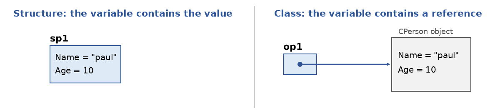

4. Klassen, Strukturen, Schnittstellen
4.1. Objekte anhand von Beispielen
4.1.1. Überblick
Wir erkunden die objektorientierte Programmierung nun anhand von Beispielen. Ein Objekt ist eine Entität, die Daten enthält, die seinen Zustand definieren (Felder, Attribute usw. genannt), sowie Funktionen (Methoden genannt). Ein Objekt wird auf der Grundlage einer Vorlage erzeugt, die Klasse heißt:
Ausgehend von der vorherigen Klasse [C1] können Sie viele Objekte wie [O1], [O2], … erzeugen. Sie alle haben die Felder [p1], [p2], … und die Methoden [M3], [M4], … Sie haben jedoch unterschiedliche Werte in ihren Feldern [pi] und damit jeweils einen eigenen Zustand. Ist [o1] ein Objekt vom Typ [C1], bezeichnet [o1.p1] das Feld [p1] von [o1], und [o1.M3] bezeichnet die Methode [M3] von [o1].
Betrachten wir ein erstes Objektmodell: die Klasse [Person].
4.1.2. Das C#-Projekt erstellen
In den Beispielen des vorigen Kapitels passte ein Programm in eine einzige Quelldatei. Ab jetzt kann ein Programm aus mehreren Quelldateien bestehen: eine Klasse pro Datei, plus das Hauptprogramm. Diese Dateien werden in einem Projekt zusammengefasst. Der Kurs von 2008 erstellte Projekte mit den Assistenten von Visual Studio 2008; hier verwenden wir das Kommandozeilenwerkzeug [dotnet], das unter Windows, Linux und macOS auf dieselbe Weise funktioniert. Kapitel 2 hat gezeigt, wie dasselbe Projekt in VS Code oder Visual Studio geöffnet wird.
Wechseln Sie in einem Terminal in den Ordner [04-classes] und erstellen Sie ein Konsolenprojekt namens [Persons]:
Der Befehl erstellt einen Ordner namens [Persons] mit zwei Dateien. Die Datei [Persons.csproj] beschreibt das Projekt:
- Zeile 4: Das Projekt erzeugt eine ausführbare Datei;
- Zeile 5: Das Zielprogramm ist .NET 10;
- Zeile 6: Eine Reihe gängiger Namespaces ([System], [System.IO], [System.Collections.Generic], [System.Linq], …) wird implizit in alle Quelldateien des Projekts importiert. Deshalb können wir
*[Console.WriteLine]ohne die Klausel***[using System;]** schreiben; - Zeile 7: Nullable-Referenztypen sind aktiviert. Der Compiler gibt eine Warnung für jede Variable eines Referenztyps (eine Zeichenkette, ein Objekt) aus, die den Wert [null] annehmen könnte, ohne dass das Programm dies erwartet. Wir kommen im Abschnitt zu diesen Typen darauf zurück; vorerst genügt es, sich zu merken, dass unsere Programme ohne jede Warnung kompiliert werden müssen.
Die zweite Datei, [Program.cs], enthält das Hauptprogramm. Alle Dateien [*.cs] im Projektordner (und seinen Unterordnern) gehören zum Projekt: Um eine Klasse [Person] hinzuzufügen, erstellen Sie einfach die Datei [Person.cs] im Ordner [Persons]. Um das Projekt auszuführen, geben Sie in seinem Ordner [dotnet run] ein: Der Befehl kompiliert das Projekt, falls es sich geändert hat, und führt es dann aus.
Alle Projekte dieses Kapitels sind in einer Projektmappe (Solution) zusammengefasst, einer Datei, die eine Menge von Projekten referenziert und die VS Code oder Visual Studio auf einmal öffnen können. Das Format [.slnx] (XML), das seit .NET 9 vom Befehl [dotnet] unterstützt wird und seit .NET 10 das Standardformat ist, ersetzt das alte Format [.sln]:
Der Befehl [dotnet build 04-classes.slnx] kompiliert dann alle Projekte der Projektmappe.
4.1.3. Definition der Klasse Person
Die Definition der Klasse [Person] in der Quelldatei [Person.cs] lautet wie folgt:
- Zeile 1: Die Klasse gehört zum Namespace [Persons] (dem Projektnamen). Diese Form, [namespace Persons;], die als „Dateigültigkeitsbereich“ („File Scope“) bezeichnet wird, platziert alle Typen der Datei im Namespace. Namespaces werden am Ende des Kapitels behandelt;
- Zeilen 6–8: die drei Felder der Klasse. Die beiden Zeichenketten werden mit der leeren Zeichenkette initialisiert; andernfalls hätten sie bei der Erzeugung des Objekts den Wert [null] , und der Compiler, bei dem Nullable-Typen aktiviert sind, würde eine Warnung ausgeben;
- Zeilen 11–15: eine Methode, die den Zustand des Objekts festlegt;
- Zeilen 19–21: eine Methode, die den Zustand des Objekts anzeigt.
Hier haben wir die Definition einer Klasse und damit eines Datentyps. Wenn wir Variablen dieses Typs erzeugen, nennen wir sie Objekte oder Instanzen der Klasse. Eine Klasse ist also eine Vorlage, aus der Objekte konstruiert werden.
Die Member einer Klasse können Daten (Felder), Methoden (Funktionen) oder Eigenschaften sein. Eigenschaften sind spezielle Methoden, mit denen der Wert der Felder eines Objekts abgerufen oder festgelegt wird. Diese Member können mit einem der folgenden Schlüsselwörter versehen werden:
Schlüsselwort | Zugriff |
[private] | Auf einen privaten Member können nur die internen Methoden der Klasse zugreifen. Dies ist die Standardzugriffsebene |
[public] | Auf einen öffentlichen Member kann jede Methode zugreifen, unabhängig davon, ob sie innerhalb der Klasse definiert ist |
[protected] | Auf einen geschützten Member können nur die internen Methoden der Klasse oder einer abgeleiteten Klasse zugreifen (siehe das Konzept der Vererbung weiter unten) |
[internal] | Auf einen internen Member kann jede Methode innerhalb derselben Assembly (desselben Projekts) zugreifen |
Im Allgemeinen werden die Daten einer Klasse als private deklariert, ihre Methoden und Eigenschaften dagegen als public. Das bedeutet, dass der Benutzer eines Objekts (der Programmierer):
- keinen direkten Zugriff auf die privaten Daten des Objekts hat;
- die öffentlichen Methoden des Objekts aufrufen kann, auch diejenigen, die Zugriff auf seine privaten Daten gewähren.
Die Syntax zur Deklaration einer Klasse [C] lautet wie folgt:
Die Reihenfolge, in der die Member [private], [protected], und [public] deklariert werden, ist beliebig.
4.1.4. Die Methode Initialize
Wozu dient die Methode [Initialize]? Da [lastName], [firstName] und [age] private Member der Klasse [Person] sind, sind die Anweisungen:
ungültig. Wir müssen ein Objekt vom Typ [Person] über eine öffentliche Methode initialisieren. Dazu dient die Methode [Initialize]. Wir schreiben:
Die Schreibweise [p1.Initialize] ist gültig, weil [Initialize] öffentlich zugänglich ist.
4.1.5. Der Operator new
Die vorherige Anweisungsfolge ist jedoch fehlerhaft. Die Anweisung
deklariert [p1] als Referenz auf ein Objekt vom Typ [Person]. Dieses Objekt existiert noch nicht, und daher ist [p1] nicht initialisiert. Wenn wir anschließend [p1.Initialize("Jean", "Dupont", 30)] schreiben, rufen wir die Methode [Initialize] des Objekts auf, auf das [p1] verweist. Dieses Objekt existiert jedoch nicht, und der Compiler meldet den Fehler: Der lokalen Variablen [p1] wurde kein Wert zugewiesen. Wenn wir schreiben:
geben wir mit dem Schlüsselwort [null] explizit an, dass die Variable [p1] noch kein Objekt referenziert (das Fragezeichen in [Person?] zeigt an, dass die Variable auf [null] gesetzt sein darf). Der Compiler gibt dann nur eine Warnung aus (Dereferenzierung einer Null-Referenz), und zur Laufzeit löst der Methodenaufruf eine [NullReferenceException]-Ausnahme aus. Damit [p1] ein Objekt referenziert, müssen Sie schreiben:
Dadurch wird ein Objekt vom Typ [Person] erzeugt, das noch nicht initialisiert ist: Seine Felder haben ihre Standardwerte, hier den leeren String für [lastName] und [firstName] und 0 für [age] (ein numerisches Feld ohne expliziten Anfangswert ist 0; ein Feld mit Referenztyp ist [null]). Da [p1] nun ein Objekt referenziert, ist die Initialisierungsanweisung für dieses Objekt, [p1.Initialize("Jean", "Dupont", 30)], gültig.
4.1.6. Das Schlüsselwort this
Betrachten wir den Code der Methode [Initialize]:
Die Anweisung [this.firstName = p] bedeutet, dass dem Feld [firstName] des aktuellen Objekts ([this]) der Wert [p] zugewiesen wird. Das Schlüsselwort [this] bezeichnet das aktuelle Objekt, also dasjenige, auf dem die Methode ausgeführt wird. Woher wissen wir das? Betrachten wir, wie das von [p1] referenzierte Objekt im aufrufenden Programm initialisiert wird:
Es wird die Methode [Initialize] des Objekts [p1] aufgerufen. Wenn innerhalb dieser Methode das Objekt [this] referenziert wird, ist tatsächlich das Objekt [p1] gemeint. Die Methode [Initialize] hätte auch wie folgt geschrieben werden können:
Wenn eine Methode eines Objekts auf ein Feld [A] dieses Objekts verweist, ist die Schreibweise [this.A] implizit gemeint. Sie muss ausdrücklich verwendet werden, wenn ein Bezeichnerkonflikt besteht. Das ist bei der Anweisung [this.age = age;] der Fall, bei der [age] sowohl ein Feld des aktuellen Objekts als auch den von der Methode erhaltenen Parameter [age] bezeichnet. In diesem Fall muss die Mehrdeutigkeit aufgelöst werden, indem man das Feld [age] als [this.age] anspricht.
4.1.7. Ein Testprogramm
Hier ist ein kurzes Testprogramm. Es steht in der Quelldatei [Program.cs] des Projekts:
- Zeile 1: Das Hauptprogramm besteht aus Top-Level-Anweisungen, die zu keinem Namespace gehören. Um die Klasse [Person] allein über ihren Namen anzusprechen, müssen Sie ihren Namespace [Persons] mit der Klausel [using] importieren;
- Zeile 4: Erzeugung eines Objekts vom Typ [Person], das von [p1] referenziert wird;
- Zeile 5: Initialisierung des Objekts;
- Zeile 6: Anzeige seines Zustands.
Ergebnisse:
4.1.8. Single-File-Anwendungen
Für ein kurzes Beispiel ist ein Projekt unnötig umständlich. Seit Version 10 kann eine eigenständige Quelldatei direkt von .NET ausgeführt werden, ohne [.csproj]-Datei: Dies ist eine Single-File-Anwendung, die wir im vorigen Kapitel verwendet haben. Die Projektoptionen (aktivierte Nullable-Typen, implizite [using]-Anweisungen) entsprechen denen eines Konsolenprojekts. Wir verwenden dieses Format immer dann, wenn das Beispiel nur eine oder zwei Klassen enthält.
Die Datei enthält dann die Top-Level-Anweisungen, gefolgt von den Klassendeklarationen: Der Compiler erzwingt diese Reihenfolge, da die Top-Level-Anweisungen vor allen Typdeklarationen (Klasse, Struktur, Schnittstelle usw.) in der Datei stehen müssen. Auf diese Weise deklarierte Klassen gehören zu keinem Namespace, was in einem Single-File-Programm keine Rolle spielt.
4.1.9. Eine weitere Methode: Überladung
Fahren wir mit der Klasse *[Person] fort und fügen ihr eine zweite Methode, *[Initialize], hinzu. Das Programm *[classes-01.cs]* sieht wie folgt aus:
- Zeilen 2–7: die Top-Level-Anweisungen, d. h. das Hauptprogramm;
- Zeile 10: Die Klasse [Person] wird nach den Top-Level-Anweisungen deklariert;
- Zeilen 18–22: die Methode [Initialize] aus dem vorigen Abschnitt;
- Zeilen 26–30: eine zweite Methode [Initialize].
Wir haben nun zwei Methoden mit dem Namen [Initialize]: Das ist zulässig, solange sie unterschiedliche Parameter (in Anzahl oder Typ) erwarten. Die Methode [Initialize] ist dann überladen. Der Compiler wählt anhand der tatsächlichen Parameter aus, welche Methode aufgerufen wird: [p1.Initialize("Jean", "Dupont", 30)] (Zeile 3) ruft die erste auf, [p2.Initialize(p1)] (Zeile 6) die zweite.
Der Parameter der zweiten Methode ist eine Referenz ([p]) auf eine Person. Die Felder dieser Person ([p]) werden dann dem aktuellen Objekt ([this]) zugewiesen. Beachten Sie, dass die Methode [Initialize] direkten Zugriff auf die Felder des Objekts [p] hat, obwohl sie privat sind (Zeilen 28–30). Das gilt immer: Eine Methode einer Klasse [C] hat Zugriff auf die privaten Member aller Objekte derselben Klasse [C].
Ergebnisse:
4.1.10. Konstruktoren der Klasse Person
Ein Konstruktor ist eine Methode, die den Namen der Klasse trägt und beim Erzeugen des Objekts aufgerufen wird. Er dient im Allgemeinen dazu, das Objekt zu initialisieren. Er ist eine Methode, die Parameter entgegennehmen kann, aber keinen Wert zurückgibt. Seiner Deklaration geht kein Typ voraus (nicht einmal [void]).
Wenn eine Klasse [C] einen Konstruktor besitzt, der n Parameter erwartet, kann die Deklaration und Initialisierung eines Objekts dieser Klasse wie folgt erfolgen:
oder
Wenn eine Klasse [C] einen oder mehrere Konstruktoren besitzt, muss einer dieser Konstruktoren verwendet werden, um ein Objekt dieser Klasse zu erzeugen. Besitzt eine Klasse [C] keinen Konstruktor, hat sie einen Standardkonstruktor, nämlich den parameterlosen Konstruktor [public C()]. Die Felder des Objekts behalten dann ihre Anfangswerte. Genau das geschah in den vorigen Programmen, in denen wir [new Person()] geschrieben hatten.
Das Programm [classes-02.cs] stellt drei Konstruktoren für die Klasse [Person] bereit:
- Zeilen 17–21: Der „Haupt“-Konstruktor initialisiert die drei Felder. Da seine Parameter dieselben Namen wie die Felder haben, werden die Felder mithilfe von [this] unterschieden;
- Zeile 25: der Kopierkonstruktor. Die Notation [: this(p.firstName, p.lastName, p.age)] bedeutet, dass vor der Ausführung des (leeren) Rumpfs des Konstruktors der Konstruktor derselben Klasse ausgeführt wird, der drei Parameter erwartet – [string], [string], [int]. Man spricht dabei von verketteten Konstruktoren. Der Initialisierungscode wird so nur einmal geschrieben;
- Zeile 30: der parameterlose Konstruktor, der ebenfalls mit dem Haupt-Konstruktor verkettet ist. Da die Klasse Konstruktoren deklariert hat, besitzt sie keinen Standardkonstruktor mehr: Wenn wir [new Person()] schreiben können wollen, müssen wir ihn deklarieren;
- Zeilen 11–14: Die beiden Strings werden nicht mehr bei der Deklaration initialisiert. Das ist nicht mehr nötig: Alle Konstruktoren weisen ihnen entweder direkt oder durch Verkettung einen Wert zu, und der Compiler überprüft dies.
Im Kurs von 2008 riefen die Konstruktoren die Methode [Initialize] auf. Die Verkettung mit [this(...)] ist vorzuziehen: Bei aktivierten Nullable-Typen untersucht der Compiler nicht den Inhalt von Methoden, die ein Konstruktor aufruft, und würde melden, dass die Felder [firstName] und [lastName] am Ende der Konstruktion auf [null] gesetzt sein könnten.
Ergebnisse:
4.1.11. Objektreferenzen
Wir verwenden die Klasse [Person] aus dem vorigen Programm, lassen aber den parameterlosen Konstruktor weg und nehmen die Methode [Initialize(string, string, int)] vom Anfang des Kapitels hinzu. Das Testprogramm lautet nun wie folgt [classes-03.cs] (die Klasse geben wir nicht erneut wieder):
Ergebnisse:
Wenn die Variable [p1] wie folgt deklariert wird: [Person p1 = new Person("Jean", "Dupont", 30);] (Zeile 3), verweist [p1] auf das Objekt [Person("Jean", "Dupont", 30)], ist aber nicht das Objekt selbst. In C würde man von einem Zeiger sprechen, also der Adresse des erzeugten Objekts. Wenn wir anschließend [p1 = null;] schreiben, wird nicht das Objekt [Person("Jean", "Dupont", 30)] verändert, sondern die Referenz [p1] ändert ihren Wert. Das Objekt geht „verloren“, wenn es von keiner anderen Variablen referenziert wird: Der von ihm belegte Speicher wird später vom Garbage Collector von .NET freigegeben.
Wenn wir [Person p2 = p1;] (Zeile 6) schreiben, initialisieren wir die Referenz [p2]: Sie „zeigt“ auf dasselbe Objekt (sie verweist auf dasselbe Objekt) wie die Referenz [p1]. Wird also das von [p1] „referenzierte“ Objekt verändert, wird auch das von [p2] referenzierte Objekt verändert (Zeilen 5–6 der Ergebnisse).
Wenn [Person p3 = new Person(p1);] geschrieben wird (Zeile 9), wird ein neues Objekt [Person] erzeugt. Dieses neue Objekt wird von [p3] referenziert. Wird das von [p1] referenzierte Objekt verändert, bleibt das von [p3] referenzierte Objekt (Zeile 7) unverändert.
Schließlich gibt in Zeile 19 der Operator [==], auf zwei Objektreferenzen angewendet, an, ob sie auf dasselbe Objekt verweisen: [p1] und [p2] verweisen auf dasselbe Objekt, während [p1] und [p3] auf zwei verschiedene Objekte verweisen, obwohl diese denselben Inhalt haben (Zeile 8).
4.1.12. Übergabe von Objektreferenzen als Parameter
Im vorigen Kapitel haben wir untersucht, wie Funktionsparameter übergeben werden, wenn sie einfache Typen sind ([int], [double], …). Sehen wir nun, was geschieht, wenn der Parameter eine Objektreferenz ist. Dafür verwenden wir die Klasse [StringBuilder] aus .NET. Ein [string]-Objekt kann nicht verändert werden: Eine Operation wie [s.ToUpper()] liefert ein neues [string]-Objekt zurück. Ein [StringBuilder]-Objekt hingegen ist ein veränderlicher String: Seine Methode [Append] fügt dem String Zeichen hinzu, ohne ein neues Objekt zu erzeugen.
Das Programm [classes-04.cs] sieht wie folgt aus:
- Zeile 1: Die Klasse [StringBuilder] gehört zum Namespace [System.Text], der nicht zu den implizit importierten Namespaces zählt;
- Zeile 4: drei Referenzen [sb0, sb1, sb2] auf Objekte vom Typ [StringBuilder];
- Zeile 6: Diese werden mit unterschiedlichen Modi an die Funktion [ChangeStringBuilder] übergeben: [sb0] und [sb1] im Standardmodus, [sb2] mit dem Schlüsselwort [ref] sowie eine vierte Referenz, [sb3], die direkt im Aufruf deklariert wird ([out StringBuilder sb3]), mit dem Schlüsselwort [out];
- Zeilen 10–17: eine lokale Funktion mit den formalen Parametern [sbf0, sbf1, sbf2, sbf3]. Die Beziehungen zwischen den formalen Parametern [sbfi] und den tatsächlichen Parametern [sbi] sind wie folgt:
- [sbf0] und [sb0] sind beim Start der Funktion zwei verschiedene Referenzen, die auf dasselbe Objekt verweisen (Referenzen werden als Wert übergeben);
- dasselbe gilt für [sbf1] und [sb1];
- [sbf2] und [sb2] sind ein und dieselbe Referenz (Schlüsselwort [ref]);
- [sbf3] und [sb3] sind ebenfalls dieselbe Referenz (Schlüsselwort [out]), die die Funktion initialisieren muss.
Ergebnisse:
Erläuterungen:
- [sb0] und [sbf0] sind zwei verschiedene Referenzen auf dasselbe Objekt. Dieses Objekt wurde über [sbf0] verändert (Zeile 13). Diese Änderung ist über [sb0] sichtbar (Zeile 5);
- [sb1] und [sbf1] sind zwei verschiedene Referenzen auf dasselbe Objekt. [sbf1] erhält innerhalb der Funktion einen neuen Wert und verweist nun auf ein neues Objekt (Zeile 14). Dies ändert nichts am Wert von [sb1], das weiterhin auf das ursprüngliche, unveränderte Objekt verweist;
- [sb2] und [sbf2] sind dieselbe Referenz. [sbf2] verweist nun auf ein neues Objekt (Zeile 15). Da [sbf2] und [sb2] ein und dieselbe Entität sind, verweist [sb2] ebenfalls auf dieses neue Objekt;
- vor dem Funktionsaufruf hatte [sb3] keinen Wert. Nach dem Aufruf verweist [sb3] auf das von der Funktion erzeugte Objekt (Zeile 16).
4.1.13. Temporäre Objekte
In einem Ausdruck kann man den Konstruktor eines Objekts ausdrücklich aufrufen: Das Objekt wird erzeugt, aber es gibt keine Variable, über die man später darauf zugreifen könnte (um es etwa zu verändern). Dieses temporäre Objekt wird für die Auswertung des Ausdrucks erzeugt und anschließend verworfen. Der von ihm belegte Speicherplatz wird später automatisch vom Garbage Collector freigegeben, dessen Aufgabe es ist, den Speicherplatz von Objekten zurückzugewinnen, die von den Daten des Programms nicht mehr referenziert werden.
Betrachten wir das folgende Programm [classes-05.cs], in dem die Konstruktoren der Klasse [Person] eine Meldung anzeigen:
- Zeile 2: Das Objekt [Person("Jean", "Dupont", 30)] wird konstruiert und dann an den Kopierkonstruktor übergeben, der ein zweites Objekt konstruiert; anschließend wird auf diesem Objekt die Methode [Identify] aufgerufen. Keines der beiden Objekte wird von einer Variablen referenziert.
Ergebnisse:
Die Ergebnisse zeigen die aufeinanderfolgende Erzeugung der beiden temporären Objekte.
4.1.14. Methoden zum Lesen und Schreiben privater Felder
Wir fügen der Klasse [Person] die notwendigen Methoden hinzu, um den Zustand der Felder der Objekte zu lesen oder zu ändern ([classes-06.cs]):
- Zeilen 22–35: die Lesemethoden, sogenannte Getter;
- Zeilen 38–51: die Schreibmethoden, sogenannte Setter.
Ergebnisse:
Dieser Ansatz ist typisch für die Sprache Java. C# bietet einen eleganteren Mechanismus: Eigenschaften.
4.1.15. Eigenschaften
Es gibt eine weitere Möglichkeit, auf die Felder einer Klasse zuzugreifen: indem man Eigenschaften erstellt. Mit ihnen können wir private Felder so handhaben, als wären sie öffentlich.
Eine Eigenschaft erlaubt es, den Wert eines Feldes zu lesen ([get]) oder zu setzen ([set]). Eine Eigenschaft wird wie folgt deklariert:
Dabei ist [Type] in der Regel der Typ des Feldes, das die Eigenschaft verwaltet. Sie kann zwei Methoden namens [get] und [set] besitzen. Die Methode [get] gibt üblicherweise den Wert des von ihr verwalteten Feldes zurück (sie könnte auch etwas anderes zurückgeben; nichts hindert sie daran). Die Methode [set] erhält einen Parameter namens [value], den sie normalerweise dem von ihr verwalteten Feld zuweist. Dabei kann sie die Gültigkeit des erhaltenen Werts prüfen und gegebenenfalls eine Ausnahme auslösen, wenn der Wert ungültig ist.
Betrachten wir das Programm [classes-07.cs], in dem die vorherigen Zugriffsmethoden (Getter und Setter) durch Eigenschaften mit Lese- und Schreibzugriff ersetzt wurden:
Die [set]-Methoden der drei Eigenschaften prüfen den erhaltenen Wert (Zeilen 52–57, 66–71, 80–85).
- Zeilen 53–55: Die Methode [string.IsNullOrWhiteSpace] gibt [true] zurück, wenn der String [null] oder leer ist oder ausschließlich aus Leerzeichen besteht. Die ausgelöste Ausnahme ist vom Typ [ArgumentException], der von .NET definierten Ausnahme für einen ungültigen Parameter. Die Version von 2008 löste eine Ausnahme des allgemeinen Typs [Exception] aus, was den Aufrufer zwingt, alle Ausnahmen abzufangen;
- Zeilen 34–39: Der Konstruktor initialisiert das Objekt über die Eigenschaften statt über die Felder. So kann er die Prüfungen der [set]-Methoden nutzen, die nur an einer Stelle implementiert sind.
Wie werden die Methoden [get] und [set] aufgerufen? In der Anweisung in Zeile 3 versucht das Programm, die Werte der Eigenschaften [FirstName], [LastName] und [Age] der Person [p] abzurufen. Die [get]-Methode dieser Eigenschaften wird dann aufgerufen und gibt den Wert des von ihnen verwalteten Feldes zurück. In der Anweisung [p.Age = 56;] (Zeile 4) wollen wir den Wert der Eigenschaft [Age] setzen. Dann wird die [set]-Methode dieser Eigenschaft aufgerufen. Sie erhält 56 als ihren Parameter [value].
Eine Eigenschaft [P] einer Klasse [C], die nur die Methode [get] definiert, heißt schreibgeschützt. Wenn [c] ein Objekt der Klasse [C] ist, wird die Operation [c.P = value] vom Compiler abgelehnt.
Ergebnisse:
Zeile 4 der Ergebnisse zeigt, dass die Zuweisung [p.Age = -4] (Zeile 8) von der Methode [set] der Eigenschaft [Age] abgelehnt wurde.
4.1.16. Objektinitialisierer
Eigenschaften können mit folgender Syntax zusammen mit einem Konstruktor verwendet werden:
Diese Syntax, Objektinitialisierer genannt, ist äquivalent zu folgendem Code:
Die Reihenfolge der Eigenschaften spielt keine Rolle. Im vorigen Programm [classes-07.cs]besitzt die Klasse [Person] einen parameterlosen Konstruktor, der nichts initialisiert. Kehren wir zum Ende des Hauptprogramms zurück:
Zeile 15: Der parameterlose Konstruktor wird verwendet, um eine Person zu erzeugen, die anschließend über ihre Eigenschaften initialisiert wird. Wir hätten [new Person() { Age = 7, ... }] schreiben können, aber bei dieser Syntax sind die Klammern für den parameterlosen Konstruktor nicht erforderlich. Die [set]-Methoden werden tatsächlich aufgerufen: In Zeile 19 wird der Name, der ein Leerzeichen enthält, abgelehnt (Zeile 6 der Ergebnisse).
4.1.17. Automatische Eigenschaften
In vielen Fällen lesen und schreiben die Methoden [get] und [set] einer Eigenschaft einfach nur ein privates Feld, ohne weitere Verarbeitung. In solchen Fällen können Sie eine automatische Eigenschaft wie folgt deklarieren:
Das mit der Eigenschaft verbundene private Feld wird nicht deklariert; es wird automatisch vom Compiler erzeugt und ist nur über seine Eigenschaft zugänglich. Statt also das Feld [firstName] und die Eigenschaft [FirstName] für das Programm [classes-07.cs] zu schreiben, können Sie schreiben:
ohne das private Feld [firstName] zu deklarieren. Der Ausdruck [= ""] nach der Eigenschaft ist der Anfangswert des verborgenen Feldes. Der Unterschied zwischen den beiden Eigenschaften besteht darin, dass die erste den Vornamen in [set] prüft, während die zweite keine Prüfung durchführt.
Ist die Verwendung der automatischen Eigenschaft [FirstName] gleichbedeutend mit der Deklaration eines öffentlichen Feldes [public string FirstName;]? Für den Benutzer der Klasse ist die Syntax dieselbe. Ein Feld einer Klasse als öffentlich zu deklarieren, wird jedoch nicht empfohlen: Es verletzt das Prinzip der Kapselung des Zustands eines Objekts, der privat sein und über öffentliche Methoden bereitgestellt werden sollte. Bei einer automatischen Eigenschaft können später in [set] Prüfungen hinzugefügt werden, ohne den Code der Benutzer der Klasse zu ändern.
Automatische Eigenschaften haben mehrere Varianten, wie das Programm [classes-08.cs] zeigt:
- Zeile 29: eine automatische Eigenschaft mit Lese- und Schreibzugriff und einem Anfangswert;
- Zeile 31: eine schreibgeschützte automatische Eigenschaft – sie hat kein [set] und kann nur von einem Konstruktor gesetzt werden (Zeile 24);
- Zeile 33: Die [set]-Methode darf einen restriktiveren Zugriff haben als die Eigenschaft: Hier ist die Eigenschaft [Age] für alle lesbar, kann aber nur von den Methoden der Klasse verändert werden, etwa von [GrowOlder] (Zeile 40);
- Zeile 35: eine [init]-Eigenschaft (C# 9): Sie kann von einem Konstruktor oder einem Objektinitialisierer (Zeile 2) gesetzt werden, danach aber nicht mehr. So lassen sich unveränderliche Objekte erzeugen und dabei die Syntax der Objektinitialisierer nutzen;
- Zeile 37: eine schreibgeschützte Eigenschaft, deren Wert berechnet wird. Die Notation [=> expression] ist eine Kurzform von [get { return expression; }]. Sie gilt auch für Methoden (Zeile 40): Man spricht dann von Expression-bodied-Membern;
- Zeile 46: eine erforderliche Eigenschaft (C# 11): Das Schlüsselwort [required] verlangt, dass der Code, der ein [Contact]-Objekt erzeugt, die Eigenschaft [Email] in einem Objektinitialisierer initialisiert (Zeile 15). Der Compiler lehnt Zeile 17 ab, wenn die Kommentierung aufgehoben wird;
- Zeilen 10–12: drei Anweisungen, die der Compiler aus den in den Kommentaren genannten Gründen ablehnt.
Denken Sie daran: Mit dem Schlüsselwort [var] (Zeile 2) wird der Typ der Variablen aus dem Ausdruck abgeleitet, der sie initialisiert, hier [Person].
Ergebnisse:
Schließlich kann eine automatische Eigenschaft als virtuell deklariert ([public virtual string Prop { get; set; }]) und in einer abgeleiteten Klasse überschrieben werden, zum Beispiel, um in [set] eine Prüfung hinzuzufügen. Die Schlüsselwörter [virtual] und [override] werden zusammen mit der Vererbung eingeführt.
4.1.18. Das Schlüsselwort field (C# 14)
Zwischen der automatischen Eigenschaft, die keinerlei Prüfung vornimmt, und der vollständigen Eigenschaft im Programm [classes-07.cs], die die Deklaration eines Feldes erfordert, bietet C# 14 eine Zwischenlösung: In den Zugriffsmethoden einer Eigenschaft bezeichnet das Schlüsselwort [field] das vom Compiler erzeugte Feld. So können Sie eine Prüfung schreiben, ohne ein Feld zu deklarieren:
- Zeilen 26–31: die Eigenschaft [FirstName]. Ihre Methode [get] ist automatisch ([get;]): Sie gibt den Wert des verborgenen Feldes zurück. Ihre Methode [set] prüft den erhaltenen Wert und weist ihn – ohne führende und nachfolgende Leerzeichen – dem verborgenen Feld zu, das durch [field] bezeichnet wird. Der Ausdruck [condition ? throw ... : value] verwendet eine throw-Anweisung: Ist die Bedingung wahr, wird eine Ausnahme ausgelöst; andernfalls ergibt der Ausdruck [value.Trim()];
- Zeile 32: der Anfangswert des verborgenen Feldes;
- Zeilen 42–51: eine [set] -Methode, die mit einem Anweisungsblock geschrieben ist.
Ergebnisse:
Der Vorname „jean“, der von Leerzeichen umgeben angegeben wurde (Zeile 2 des Programms), wurde ohne sie gespeichert (Zeile 2 der Ergebnisse).
4.1.19. Klassenmethoden und -attribute
Angenommen, wir wollen die Anzahl der in einer Anwendung erzeugten [Person]-Objekte zählen. Wir könnten selbst einen Zähler führen, laufen dabei aber Gefahr, temporäre Objekte zu übersehen, die hier und da erzeugt werden. Sicherer erscheint es, in die Konstruktoren der Klasse [Person] eine Anweisung aufzunehmen, die einen Zähler erhöht. Dieser Zähler kann kein gewöhnliches Feld sein, da jedes Objekt seine eigenen Felder hat: Er ist ein Feld der Klasse selbst, nicht einer bestimmten Instanz dieser Klasse. Wir deklarieren ihn mit dem Schlüsselwort [static]:
Um darauf zu verweisen, schreiben wir [Person.nbPersons] und zeigen damit an, dass es sich um ein Feld der Klasse [Person] selbst handelt. Hier haben wir ein privates Feld erzeugt, auf das von außerhalb der Klasse nicht direkt zugegriffen werden kann. Wir erstellen daher eine öffentliche Eigenschaft, die den Zugriff auf das Klassenfeld [nbPersons] ermöglicht. Um den Wert von [nbPersons] zurückzugeben, benötigt die [get]-Methode dieser Eigenschaft kein bestimmtes [Person]-Objekt: Wir brauchen also auch eine als [static] deklarierte Eigenschaft, die von außen mit der Syntax [Person.NbPersons] aufgerufen wird. Hier ein Beispiel für [classes-10.cs]:
- Zeile 14: das Klassenfeld. Wie jedes numerische Feld wird es mit 0 initialisiert;
- Zeilen 17–19: die schreibgeschützte Klasseneigenschaft. Sie hätte einfacher als [public static long NbPersons { get; private set; }] geschrieben werden können;
- Zeilen 23–25: eine Klassenmethode. Sie wird über den Klassennamen aufgerufen: [Person.Unknown()] (Zeile 7). Eine Klassenmethode hat kein aktuelles Objekt: Das Schlüsselwort [this] hat hier keine Bedeutung, und sie kann direkt nur auf die Klassenmember vom Typ [static] zugreifen;
- Zeile 39: Der Haupt-Konstruktor erhöht den Zähler. Der Kopierkonstruktor, der mit dem Haupt-Konstruktor verkettet ist, erhöht ihn daher ebenfalls.
Ergebnisse:
Das Programm hat das in Zeile 4 erzeugte temporäre Objekt korrekt mitgezählt. Wir verwenden von Anfang an Klassenmember: [Console.WriteLine], [int.Parse] und [Math.Sqrt] sind Methoden vom Typ [static]. [Console] und [Math] sind sogar statische Klassen ([static class]): Sie enthalten ausschließlich Member vom Typ [static], und es können keine Instanzen von ihnen erzeugt werden.
4.1.20. Ein Array von Personen
Ein Objekt ist ein Datum wie jedes andere, und daher können mehrere Objekte in einem Array zusammengefasst werden [classes-11.cs]:
- Zeile 2: erzeugt ein Array mit 3 Elementen vom Typ [Person]. Diese 3 Elemente werden hier mit dem Wert [null] initialisiert, das heißt, sie verweisen auf keine Objekte. Streng genommen spricht man von einem „Array von Objekten“, obwohl es lediglich ein Array von Objektreferenzen ist. Die Erzeugung des Arrays – das selbst ein Objekt ist (wie [new] anzeigt) – erzeugt keine Objekte desselben Typs wie seine Elemente; das muss anschließend geschehen. Beachten Sie, dass der Compiler nicht darauf hinweist, dass die Elemente eines Arrays vom Typ [Person[]] unmittelbar nach seiner Erzeugung gleich [null] sind: Das ist eine Einschränkung der Analyse von Nullable-Typen;
- Zeilen 3–5: Erzeugung von 3 Objekten vom Typ [Person];
- Zeilen 7–9: Anzeige des Inhalts des Arrays [friends].
Die weiter unten deklarierte Klasse [Person] ist vom Programm [classes-03.cs] abgeleitet und auf ihren Konstruktor mit drei Parametern und ihre Methode [Identify] reduziert. Ergebnisse:
4.1.21. new()-Ausdrücke mit Zieltyp
Wenn der Typ des zu erzeugenden Objekts aus dem Kontext bekannt ist, erlaubt C# 9, den Klassennamen nach [new] wegzulassen. Das Programm [classes-12.cs] zeigt dies:
- Zeile 3: Der Typ des mit [new(...)] erzeugten Objekts ist der Typ der Variablen, die es erhält, nämlich [Person]. Diese Syntax ist das Gegenstück zu [var]: Mit [var] wird der Typ der Variablen aus dem Ausdruck abgeleitet; mit [new()] wird der Typ des Objekts aus der Variablen abgeleitet;
- Zeile 4: [new()] mit einem Objektinitialisierer;
- Zeilen 6–11: ein Array, das mit einem Collection-Ausdruck (C# 12) erzeugt und befüllt wird: Die Elemente stehen in eckigen Klammern und sind durch Kommas getrennt. Der Typ der Elemente, [Person], ist bekannt: [new(...)] genügt, um sie zu erzeugen;
- Zeile 18: Der Typ des erzeugten Objekts ist der des Parameters der Funktion [Display].
Ergebnisse:
4.2. Vererbung anhand eines Beispiels
4.2.1. Überblick
Hier behandeln wir das Konzept der Vererbung. Der Zweck der Vererbung besteht darin, eine bestehende Klasse so „anzupassen“, dass sie unseren Anforderungen entspricht. Angenommen, wir wollen eine Klasse namens [Teacher] erstellen: Ein Lehrer ist eine besondere Art von Person. Er hat Attribute, die andere Personen nicht haben: zum Beispiel das Fach, das er unterrichtet. Aber er hat auch die Attribute, die allen Personen gemeinsam sind: Vorname, Nachname und Alter. Ein Lehrer ist also vollwertiges Mitglied der Klasse [Person] , besitzt aber zusätzliche Attribute. Anstatt eine Klasse [Teacher] von Grund auf neu zu erstellen, bauen wir lieber auf der bestehenden Klasse [Person] auf und passen sie an die Besonderheiten von Lehrern an. Das Konzept der Vererbung ermöglicht dies.
Um anzugeben, dass die Klasse [Teacher] die Eigenschaften der Klasse [Person] erbt, schreiben wir:
[Person] heißt Elternklasse (oder Basisklasse), und [Teacher] heißt abgeleitete Klasse (oder Kindklasse). Ein [Teacher]-Objekt hat alle Merkmale eines [Person]-Objekts: Es hat dieselben Felder und Methoden. Diese Felder und Methoden der Elternklasse werden in der Definition der Kindklasse nicht wiederholt; man gibt lediglich die Felder und Methoden an, die die Kindklasse hinzufügt. Eine C#-Klasse kann nur von einer einzigen Elternklasse abgeleitet sein.
Die Beispiele in diesem Abschnitt sind zwei Konsolenprojekte, [Inheritance1] und [Inheritance2], aus der Projektmappe [04-classes.slnx]. Im Projekt [Inheritance1] ist die Klasse [Person] wie folgt definiert: [Person.cs]:
- Zeile 6: der Personenzähler aus dem vorigen Abschnitt, diesmal als automatische Klasseneigenschaft geschrieben, deren Definition der Klasse vorbehalten ist;
- Zeilen 9–15: Der Konstruktor initialisiert das Objekt über seine Eigenschaften und zeigt eine Fortschrittsmeldung an;
- Zeilen 19–34: drei Eigenschaften, die ihre Werte mit dem Schlüsselwort [field] prüfen. Die Prüfungen für Vor- und Nachname, die identisch sind, wurden in die private Klassenmethode [Check] ausgelagert (Zeilen 41–47);
- Zeile 38: Die Methode [Identify] aus den vorherigen Beispielen wurde durch die schreibgeschützte Eigenschaft [Identity] ersetzt, die die Identität der Person zurückgibt, statt sie anzuzeigen.
Wir erstellen eine Klasse namens [Teacher], die von der Klasse [Person] erbt: [Teacher.cs]:
Die Klasse [Teacher] ergänzt die Methoden und Eigenschaften der Klasse [Person] um Folgendes:
- Zeile 3: Die Klasse [Teacher] ist von der Klasse [Person] abgeleitet;
- Zeile 16: eine Eigenschaft [Section], nämlich die Nummer der Sektion, der der Lehrer innerhalb des Lehrkörpers angehört (ungefähr eine Sektion pro Fach);
- Zeilen 6–12: ein Konstruktor, der alle Eigenschaften eines Lehrers initialisiert;
- Zeile 19: eine neue Eigenschaft [Identity], auf die wir später genauer eingehen.
4.2.2. Erzeugung eines Teacher-Objekts
Eine Kindklasse erbt die Konstruktoren ihrer Elternklasse nicht. Sie muss ihre eigenen Konstruktoren definieren. Der Konstruktor der Klasse [Teacher] lautet wie folgt:
Die Deklaration in den Zeilen 6–7 legt fest, dass der Konstruktor vier Parameter erwartet: [firstName], [lastName], [age], [section], und drei davon ([firstName], [lastName], [age]) an seine Basisklasse weitergibt, in diesem Fall die Klasse [Person]. Wir wissen, dass diese Klasse einen Konstruktor [Person(string, string, int)] besitzt, mit dem wir anhand der übergebenen Parameter eine Person erzeugen können. Sobald die Konstruktion des [Person]-Teils abgeschlossen ist, wird die Konstruktion des [Teacher]-Objekts mit der Ausführung des Konstruktorrumpfs fortgesetzt (Zeile 10).
Beachten Sie, dass auf der linken Seite des Zeichens = die Eigenschaft [Section] verwendet wird. Würde diese Eigenschaft Gültigkeitsprüfungen durchführen, käme der Konstruktor in deren Genuss. So muss man diese Prüfungen nicht an zwei verschiedenen Stellen unterbringen: im Konstruktor und in der Eigenschaft.
Zusammengefasst: Der Konstruktor einer abgeleiteten Klasse
- gibt an seine Basisklasse die Parameter weiter, die diese für ihre eigene Konstruktion benötigt;
- verwendet die übrigen Parameter, um seine eigenen Member zu initialisieren.
Wir hätten auch Folgendes schreiben können:
Das ist aus zwei Gründen unmöglich. Erstens besitzt die Klasse *[Person] keinen parameterlosen Konstruktor: Fehlt ***[: base(...)], versucht der Compiler, diesen Konstruktor aufzurufen, und meldet einen Fehler. Zweitens hätten, selbst wenn die privaten Felder [firstName], [lastName] und [age] existierten (hier handelt es sich um die verborgenen Felder der Eigenschaften), nur Objekte der Klasse [Person] direkten Zugriff darauf. Alle anderen Objekte, einschließlich der Objekte abgeleiteter Klassen wie in diesem Fall, müssen über öffentliche (oder geschützte) Member darauf zugreifen. Das wäre anders, wenn die Klasse *[Person] diese Felder als geschützt deklariert hätte (*[protected]*): Dann könnten abgeleitete Klassen direkt darauf zugreifen. Die Verwendung des Konstruktors der Elternklasse ist daher die richtige Lösung und das übliche Vorgehen: Beim Konstruieren eines Kindobjekts ruft man zuerst den Konstruktor des Elternobjekts auf und schließt dann die für das Kindobjekt spezifischen Initialisierungen ab ([Section]* in unserem Beispiel).
Würde die Klasse [Teacher] keine Eigenschaft [Identity] definieren, bezöge sich der Ausdruck [e.Identity] – wobei [e] ein Lehrer ist – auf die Eigenschaft [Identity], die von der Klasse [Person] geerbt wurde: Sie ist öffentlich und wird durch Vererbung zu einer öffentlichen Eigenschaft der Klasse [Teacher]. Sie würde dann die Identität des [Person]-Teils des Lehrers ohne seine Sektion liefern.
4.2.3. Eine Eigenschaft oder Methode verbergen: das Schlüsselwort new
Um die vollständige Identität eines Lehrers zu erhalten, definiert die Klasse [Teacher] ihre eigene Eigenschaft [Identity]:
Die Eigenschaft [Identity] der Klasse [Teacher] stützt sich auf die Eigenschaft [Identity] ihrer Elternklasse, bezeichnet als [base.Identity], um den „Person“-Anteil zu erhalten, und ergänzt ihn dann um die Sektion, die für die Klasse [Teacher] spezifisch ist.
Betrachten wir ein Lehrerobjekt [E]. Dieses Objekt enthält ein [Person]-Objekt:

Die Eigenschaft [Identity] ist sowohl in der Klasse [Teacher] als auch in ihrer Elternklasse [Person] definiert. In der Kindklasse [Teacher] steht vor der Eigenschaft [Identity] das Schlüsselwort [new], um anzuzeigen, dass absichtlich eine neue Eigenschaft [Identity] für die Klasse [Teacher] definiert wird (ohne [new] gibt der Compiler eine Warnung aus). Die Klasse [Teacher] hat nun zwei Eigenschaften [Identity]:
- eine von der Elternklasse [Person] geerbte;
- eine eigene.
Wenn [E] ein [Teacher]-Objekt ist, bezieht sich [E.Identity] auf die Eigenschaft [Identity] der Klasse [Teacher]. Man sagt, die Eigenschaft [Identity] der Kindklasse verdeckt (verbirgt) die Eigenschaft [Identity] der Elternklasse. Allgemein gilt: Wenn [O] ein Objekt und [M] eine Methode ist, sucht der Compiler zur Ausführung der Methode [O.M] nach einer Methode [M] in folgender Reihenfolge:
- in der Klasse des Objekts [O];
- in ihrer Elternklasse, falls sie eine hat;
- in der Elternklasse ihrer Elternklasse, falls diese existiert;
- und so weiter.
Die Vererbung erlaubt es der Kindklasse also, Methoden und Eigenschaften mit denselben Namen wie in der Elternklasse neu zu definieren. Dadurch lässt sich die Kindklasse an ihre eigenen Anforderungen anpassen.
Das Testprogramm [Program.cs] des Projekts [Inheritance1] lautet wie folgt:
- Zeile 4: erzeugt einen Lehrer;
- Zeile 6: zeigt seine Identität an, nämlich die der Klasse [Teacher];
- Zeile 8: Der Konvertierungsoperator [(Person)] behandelt das Objekt [e] als [Person]: Es wird dann die Eigenschaft [Identity] der Klasse [Person] verwendet;
- Zeilen 12–13: Aufruf der Funktion [Display] (Zeilen 20–22) mit einem Lehrer und anschließend mit einer Person. Darauf kommen wir im nächsten Abschnitt zurück;
- Zeilen 15–16: Aufruf der Methode [ToString] auf beiden Objekten. Auch darauf kommen wir noch zurück.
Ergebnisse:
Wir sehen, dass:
- ein [Person] -Objekt (Zeile 2) vor dem [Teacher] -Objekt (Zeile 3) erzeugt wurde;
- [e.Identity] die vollständige Identität des Lehrers lieferte (Zeile 4) und [((Person)e).Identity] die Identität seines [Person]-Anteils (Zeile 5).
4.2.4. Polymorphie
Betrachten wir eine Klassenhierarchie: C0 ← C1 ← C2 ← … ← Cn, wobei Ci ← Cj bedeutet, dass die Klasse Cj von der Klasse Ci abgeleitet ist. Das bedeutet, dass die Klasse Cj alle Merkmale der Klasse Ci plus zusätzliche besitzt. Es seien Oi Objekte vom Typ Ci. Es ist zulässig, [Oi = Oj] mit j > i zu schreiben. Denn durch Vererbung hat die Klasse Cj alle Merkmale der Klasse Ci plus zusätzliche. Ein Objekt Oj vom Typ Cj enthält daher ein Objekt vom Typ Ci. Die Operation [Oi = Oj] bewirkt, dass Oi eine Referenz auf das im Objekt Oj enthaltene Objekt vom Typ Ci ist.
Die Tatsache, dass eine Variable Oi der Klasse Ci nicht nur ein Objekt der Klasse Ci, sondern jedes von der Klasse Ci abgeleitete Objekt referenzieren kann, nennt man Polymorphie: die Fähigkeit einer Variablen, auf verschiedene Arten von Objekten zu verweisen.
Nehmen wir ein Beispiel und betrachten die Funktion [Display] aus dem vorigen Programm:
Wir können ihr entweder eine *[Person]* oder einen *[Teacher] übergeben: Im letzteren Fall erhält der formale Parameter [p], der vom Typ [Person] ist, einen Wert vom Typ [Teacher]. Da der Typ [Teacher] vom Typ [Person]* abgeleitet ist, ist dies zulässig.
Die Eigenschaft [p.Identity] gibt einen String zurück, der das [Person]-Objekt [p] identifiziert. Was geschieht, wenn der an die Funktion [Display] übergebene Parameter ein Objekt vom Typ [Teacher] ist? Die vorherigen Ergebnisse zeigen: Die Anweisung [p.Identity] führte jedes Mal die Eigenschaft [Identity] einer [Person] aus, zuerst für die im Lehrer [e] enthaltene Person (Zeile 7), dann für die Person [p] selbst (Zeile 8). Sie passte sich nicht an das tatsächlich als Parameter an [Display] übergebene Objekt an. Wir hätten lieber die vollständige Identität des Lehrers [e] erhalten. Dafür hätte sich die Notation [p.Identity] auf die Eigenschaft [Identity] des Objekts beziehen müssen, auf das [p] tatsächlich verweist, und nicht auf die Eigenschaft [Identity] des „Person“-Anteils dieses Objekts. Beim Verdecken ([new]) wird die Eigenschaft zur Kompilierzeit anhand des deklarierten Typs der Variablen ([Person]) ausgewählt.
4.2.5. Neudefinition und Polymorphie: virtual und override
Das gewünschte Ergebnis lässt sich erreichen, indem man [Identity] als virtuelle Eigenschaft ([virtual]) in der Basisklasse [Person] deklariert. Genau das tut das Projekt [Inheritance2]; seine Klasse [Person] ist dieselbe wie im Projekt [Inheritance1], mit zwei Änderungen:
- Zeile 38: Das Schlüsselwort [virtual] macht [Identity] zu einer virtuellen Eigenschaft. Dieses Schlüsselwort kann auch auf Methoden angewendet werden. Kindklassen, die eine virtuelle Eigenschaft oder Methode überschreiben, müssen dann das Schlüsselwort [override] statt [new] verwenden, um ihre überschriebene Eigenschaft oder Methode zu kennzeichnen;
- Zeile 41: eine Neudefinition der Methode [ToString], die im folgenden Abschnitt besprochen wird.
In der Klasse [Teacher] wird die Eigenschaft [Identity] wie folgt neu definiert:
- Zeile 18: Die Eigenschaft [Identity] überschreibt die der Elternklasse;
- Zeile 4: Die Klasse ist versiegelt ([sealed]), worauf wir später genauer eingehen.
Bei einer virtuellen Eigenschaft oder Methode wird die Entscheidung, welche Eigenschaft von [p.Identity] ausgeführt wird, zur Laufzeit getroffen, und zwar anhand des tatsächlichen Typs des Objekts, auf das [p] verweist. Das Programm [Program.cs] aus dem Projekt [Inheritance2] lautet wie folgt:
Ergebnisse:
Diesmal hat die Funktion [Display] in Zeile 4 den vollständigen Namen des Lehrers korrekt angezeigt.
4.2.6. Die Methode ToString
Die Klasse [object] (der C#-Alias für die Klasse [System.Object]) ist die „Elternklasse“ aller C#-Klassen. Wenn Sie also schreiben:
schreiben Sie implizit:
Die Klasse [object] definiert eine virtuelle Methode [ToString], die standardmäßig den vollständigen Klassennamen des Objekts zurückgibt. Das haben die letzten beiden Ausgabezeilen des Projekts [Inheritance1] mit den Aufrufen von [e.ToString()] und [p.ToString()] angezeigt: [Inheritance1.Teacher] und [Inheritance1.Person]. Obwohl wir die Methode [ToString] in den Klassen [Person] und [Teacher] nicht überschrieben haben, konnte die Methode [ToString] der Klasse [object] den tatsächlichen Klassennamen des Objekts anzeigen.
Im Projekt [Inheritance2] definiert die Klasse [Person] die Methode [ToString] neu (siehe oben):
Kehren wir zum Programm [Program.cs] im Projekt [Inheritance2] zurück:
In Zeile 10 hat die Methode [WriteLine] der Klasse [Console] keine Variante, die einen Parameter vom Typ [Person] akzeptiert. Unter den verschiedenen Varianten von [WriteLine] gibt es eine, die einen Parameter vom Typ [object] akzeptiert. Der Compiler verwendet diese Methode, [WriteLine(object o)], weil diese Signatur bedeutet, dass der Parameter [o] vom Typ [object] oder von einem abgeleiteten Typ sein kann. Da [object] die Oberklasse aller Klassen ist, kann jedes Objekt als Parameter an [WriteLine] übergeben werden – auch ein Objekt vom Typ [Person] oder [Teacher]. Die Methode [WriteLine(object o)] schreibt [o.ToString()] auf die Konsole. Da die Methode [ToString] virtuell ist, wird die Methode [ToString] des tatsächlichen Objekts verwendet – in diesem Fall die der Klasse [Person]. Diese Methode gibt [Identity] zurück, das ebenfalls eine virtuelle Eigenschaft ist: Für den Lehrer [e] wird daher die Eigenschaft [Identity] der Klasse [Teacher] verwendet, wie Zeile 7 der Ergebnisse zeigt. Es ist daher nicht nötig, [ToString] in der Klasse [Teacher] neu zu definieren, anders als im Kurs von 2008.
Derselbe Mechanismus gilt für die Zeichenfolgeninterpolation: In [$"{person}"] (Zeile 16) wird das Objekt [person] durch seine Methode [ToString] in einen String umgewandelt. Die Schleife in den Zeilen 14–16 durchläuft ein Array von Referenzen auf [Person], die tatsächlich auf Objekte unterschiedlichen Typs verweisen: Die Methode [GetType] (die ebenfalls von [object] geerbt wird) liefert den tatsächlichen Typ des Objekts, dessen Eigenschaft [Name] der Name ist.
4.2.7. Versiegelte Klassen
Die Klasse [Teacher] im Projekt [Inheritance2] ist als [public sealed class Teacher : Person] deklariert. Das Schlüsselwort [sealed] verhindert, dass Klassen von der Klasse [Teacher] abgeleitet werden: Die Deklaration [class TeacherResearcher : Teacher] würde vom Compiler abgelehnt. Eine Klasse wird versiegelt, wenn sie nicht zum Ableiten gedacht ist; außerdem können der Compiler und die Laufzeitumgebung die Aufrufe ihrer virtuellen Methoden optimieren. Das Schlüsselwort gilt auch für eine neu definierte Methode oder Eigenschaft: [public sealed override string Identity] würde verhindern, dass abgeleitete Klassen sie erneut neu definieren, ohne die Ableitung von der Klasse zu untersagen.
Umgekehrt kann eine Methode oder Eigenschaft, die nicht als [virtual], [abstract] (siehe unten) oder [override] deklariert ist, nicht mit [override] überschrieben werden: In C# sind Methoden im Gegensatz zu Java standardmäßig nicht virtuell.
4.3. Die Bedeutung eines Operators für eine Klasse neu definieren
4.3.1. Einführung
Betrachten Sie den Ausdruck [op1 + op2], wobei [op1] und [op2] zwei Operanden sind. Es ist möglich, die Bedeutung des Operators [+] neu zu definieren. Ist der Operand [op1] eine Instanz der Klasse [C1], muss in der Klasse [C1] eine statische Methode mit folgender Signatur definiert werden:
Wenn der Compiler den Ausdruck [op1 + op2] antrifft, übersetzt er ihn in [C1.operator +(op1, op2)]. Der von der Methode [operator] zurückgegebene Typ ist wichtig. Betrachten wir nämlich die Operation [op1 + op2 + op3]. Sie wird vom Compiler als [(op1 + op2) + op3] übersetzt. Sei [res12] das Ergebnis von [op1 + op2]. Die nächste ausgeführte Operation ist [res12 + op3]. Ist [res12] vom Typ [C1], wird sie ebenfalls in [C1.operator +(res12, op3)] übersetzt. Dadurch lassen sich Operationen verketten.
Auch unäre Operatoren mit nur einem Operanden können neu definiert werden. Ist also [op1] ein Objekt vom Typ [C1], kann die Operation [op1++] durch eine statische Methode der Klasse [C1] neu definiert werden:
Was hier ausgeführt wurde, gilt für die meisten Operatoren, mit einigen Ausnahmen:
- Die Operatoren [==] und [!=] müssen gemeinsam neu definiert werden, ebenso [<] und [>] sowie [<=] und [>=];
- die Operatoren [&&], [||], [=], [.], [?:], [??] und [new] können nicht neu definiert werden;
- bis C# 13 konnten die zusammengesetzten Zuweisungsoperatoren ([+=], [-=], …) nicht überschrieben werden: [a += b] wurde stets zu [a = a + b] kompiliert. C# 14 erlaubt es, sie zu überschreiben, wie wir noch sehen werden.
4.3.2. Ein Beispiel
Das Projekt [Lists] in der Projektmappe definiert eine Klasse namens [ListOfPersons], die eine Liste von Personen darstellt. Die Klassen [Person] und [Teacher] in diesem Projekt entsprechen denen im Projekt [Inheritance2], jedoch ohne ihre Fortschrittsmeldungen und den Personenzähler. Im Kurs von 2008 war die Klasse *[ListOfPersons] von der Klasse *[ArrayList]* abgeleitet, einer Liste von Objekten vom Typ *[object], die inzwischen veraltet ist. Wir verwenden die generische Liste [List<Person>] (generische Klassen werden später in diesem Kapitel behandelt; die Klasse [List<T>] wird im nächsten Kapitel besprochen) und erben nicht von ihr, sondern legen sie in einem privaten Feld der Klasse ab. Man spricht hier von Komposition statt Vererbung: Die Klasse [ListOfPersons] stellt somit nur die Operationen bereit, die sie ausgewählt hat. Von der Klasse [List<Person>] verwenden wir nur die folgenden Elemente:
- die Methode [L.Add(p)], die die Person [p] zur Liste [L] hinzufügt, und die Methode [L.AddRange(L2)], die ihr alle Elemente der Liste [L2] hinzufügt;
- die Eigenschaft [L.Count], die die Anzahl der Elemente der Liste [L] zurückgibt;
- die Notation [L[i]], die das Element Nr. i der Liste [L] bezeichnet.
Die Definition der Klasse [ListOfPersons] lautet wie folgt: [ListOfPersons.cs]:
- Zeile 6: die Liste der Personen. Das Schlüsselwort [readonly] gibt an, dass das Feld nur bei seiner Deklaration oder in einem Konstruktor zugewiesen werden kann: Der Inhalt der Liste selbst darf sich ändern, das Feld verweist aber immer auf dieselbe Liste. [] ist ein leerer Collection-Ausdruck: Der Typ der erzeugten Sammlung, [List<Person>], wird aus dem Typ des Feldes abgeleitet;
- Zeile 9: die Anzahl der Personen, eine schreibgeschützte Eigenschaft;
- Zeilen 12–17: Definition des Operators [+] für die Operation [l + p], wobei [l] vom Typ [ListOfPersons] und [p] vom Typ [Person] oder einem abgeleiteten Typ ist. Der Operator erzeugt eine neue Liste (Zeile 14), kopiert die Personen aus [l] hinein (Zeile 15) und fügt dann die Person [p] hinzu (Zeile 16). Wie beim Operator [+] für Zahlen oder Strings werden die Operanden nicht verändert. Da die Liste [l] derselben Klasse angehört, hat der Operator Zugriff auf ihr privates Feld [l.persons]. Die resultierende Liste hat den Typ [ListOfPersons], wodurch sich die [+]-Operatoren wie in [l + p1 + p2] verketten lassen, was (Operatorrangfolge) als [(l + p1) + p2] interpretiert wird;
- Zeilen 21–23: Definition des Operators [+=] (C# 14). Anders als die übrigen Operatoren ist dies keine statische Methode, sondern eine Instanzmethode ohne Rückgabewert ([void]): Sie verändert das aktuelle Objekt, hier indem sie die Person [p] hinzufügt;
- Zeilen 51–53: Wir definieren die Methode [ToString] neu, um eine Liste von Personen in der Form (person1, person2, ...) anzuzeigen, wobei personi selbst das Ergebnis der Methode [ToString] der Person ist. Die statische Methode [string.Join(separator, elements)] verkettet die Textdarstellungen der Elemente und trennt sie durch das Trennzeichen. Im Kurs von 2008 wurde dieser String von Hand mit einem [StringBuilder]-Objekt aufgebaut.
Beachten Sie, dass die Klasse [ListOfPersons] keinen Konstruktor hat. Sie verwendet daher den Standardkonstruktor [public ListOfPersons()], der nichts weiter tut, als das Feld [persons] mit dem in seiner Deklaration angegebenen Wert zu initialisieren. Die Zeilen 26–46 werden im folgenden Abschnitt besprochen.
Das Testprogramm [Program.cs] beginnt wie folgt:
- Zeile 5: Erzeugung einer leeren Personenliste [l];
- Zeile 7: fügt zwei Personen mit dem Operator [+] hinzu;
- Zeile 11: [l + p] erzeugt eine neue Liste [l2]; die Liste [l] bleibt unverändert;
- Zeile 18: fügt einen Lehrer mit dem Operator [+=] hinzu;
- Zeilen 9–13: Das Verketten eines Strings mit einem Objekt verwendet die Methode [ToString], die in der Klasse [ListOfPersons] neu definiert wurde.
Ergebnisse:
4.3.3. Zusammengesetzte Zuweisungsoperatoren (C# 14)
Warum den Operator [+=] definieren, wenn [l = l + p] dasselbe Ergebnis liefert? Definiert die Klasse [+=] nicht, übersetzt der Compiler [l += p] in [l = l + p]: Es wird eine neue Liste erzeugt, alle Personen aus [l] werden in sie kopiert, dann verweist [l] auf diese neue Liste, und die alte wird vom Garbage Collector verworfen. Ist der Operator [+=] von der Klasse definiert, wird die Person der bestehenden Liste hinzugefügt, ohne sie zu kopieren. Zeile 16 speichert eine zweite Referenz [l3], auf die Liste [l]; nach der Anweisung [l += ...] verweisen beide Referenzen weiterhin auf dasselbe Objekt (Zeile 6 der Ergebnisse), was beweist, dass die Liste nicht neu erzeugt wurde. Bei einer großen Liste oder in einer Schleife ist der Leistungsunterschied erheblich.
4.4. Einen Indexer für eine Klasse definieren
Hier verwenden wir weiterhin die Klasse [ListOfPersons]. Ist [l] eine Instanz von [ListOfPersons], wollen wir die Notation [l[i]] verwenden können, um die Person Nummer i der Liste [l] zu bezeichnen, sowohl zum Lesen ([Person p = l[i]]) als auch zum Schreiben ([l[i] = new Person(...)]).
Um [l[i]] schreiben zu können, wobei [l[i]] ein Objekt [Person] bezeichnet, müssen wir eine spezielle Eigenschaft namens [this] in der Klasse [ListOfPersons] definieren:
Die Eigenschaft [this[int i]] heißt Indexer , weil sie dem Ausdruck [obj[i]], der an die Array-Notation erinnert, eine Bedeutung gibt, obwohl [obj] kein Array, sondern ein Objekt ist. Die Methode [get] des Indexers des Objekts [obj] wird aufgerufen, wenn [variable = obj[i]] geschrieben wird, und die Methode [set] wird aufgerufen, wenn [obj[i] = value] geschrieben wird.
- Zeilen 27–30: der positionsbasierte Indexer. Die Methode [get] gibt die Person Nr. i aus der privaten Liste [persons], zurück, und die Methode [set] weist ihr die Person [value] zu. Im Kurs von 2008, dessen Klasse von [ArrayList] abgeleitet war, musste der Indexer der Elternklasse mit dem Schlüsselwort [new] verdeckt und das zurückgegebene Element vom Typ [object] in [Person] konvertiert werden. Bei einer generischen Liste ist keine Konvertierung mehr nötig;
- Zeilen 34–46: Wir wollen auch [int i = l["lastName"]] schreiben können, also die Liste [l] nicht über eine Elementnummer, sondern über den Namen einer Person indizieren. Das Ergebnis von [l[lastName]] ist eine ganze Zahl: die Position der Person mit dem Namen [lastName] in der Liste oder -1, wenn diese Person nicht in der Liste enthalten ist. Es ist nur die Methode [get] definiert, wodurch die Syntax [l["lastName"] = value] verhindert wird, für die die Definition einer Methode [set] nötig gewesen wäre. Eine Klasse kann mehrere Indexer haben, sofern sich ihre Parameter unterscheiden.
Das Testprogramm wird wie folgt fortgesetzt:
- Zeile 25: Aufruf der Methode [set] des Indexers [this[int]];
- Zeile 27: Aufruf seiner Methode [get];
- Zeile 34: Aufruf des Indexers [this[string]];
- Zeile 37: Aufruf des Indexers [this[int]].
Ergebnisse:
4.5. Strukturen
4.5.1. Wert und Referenz
Die C#-Struktur entspricht der Struktur der Sprache C und ist dem Konzept einer Klasse sehr ähnlich. Eine Struktur wird wie folgt definiert:
Trotz der Ähnlichkeiten in ihren Deklarationen bestehen erhebliche Unterschiede zwischen Klassen und Strukturen. So gibt es bei Strukturen das Konzept der Vererbung nicht (eine Struktur kann jedoch Schnittstellen implementieren, die wir später behandeln). Wenn wir eine Klasse schreiben, von der nicht abgeleitet werden soll, welche Unterschiede zwischen einer Struktur und einer Klasse helfen uns dann bei der Wahl zwischen beiden? Finden wir es anhand des folgenden Beispiels heraus: [classes-13.cs]:
- Zeilen 33–36: eine Struktur mit zwei öffentlichen Feldern: [Name], [Age];
- Zeilen 40–43: eine Klasse mit zwei öffentlichen Feldern: [Name], [Age]. Öffentliche Felder, von denen im Allgemeinen abgeraten wird, machen dieses Beispiel besser lesbar.
Ergebnisse:
Diese Struktur hat hier keinen Konstruktor. Sie könnte einen haben, wie wir später zeigen werden. Standardmäßig besitzt sie immer einen parameterlosen Konstruktor – hier [SPerson()] –, der alle ihre Felder auf null setzt ([null] bei Referenzen).
Die Deklaration in Zeile 3 erzeugt eine Struktur ([Name], [Age]), und der Wert von [sp1] ist diese Struktur selbst. Ihre Felder haben noch keine Werte: Der Compiler verlangt, dass ihnen allen (Zeilen 4–5) ein Wert zugewiesen wird, bevor die Struktur verwendet wird (Zeile 6). Bei einer Klasse muss das Objekt ([Name], [Age]) ausdrücklich mit dem Operator [new] erzeugt werden (Zeile 18). Die Anweisung erzeugt ein [CPerson]-Objekt (ungefähr gleichwertig mit unserer Struktur), und der Wert von [op1] ist dann die Adresse (die Referenz) dieses Objekts.
Zusammenfassend:
- Bei der Struktur ist der Wert von [sp1] die Struktur selbst;
- Bei der Klasse ist der Wert von [op1] die Adresse des erzeugten Objekts.

Wenn im Programm [SPerson sp2 = sp1;] geschrieben wird (Zeile 8), wird eine neue Struktur [sp2] ([Name], [Age]) erzeugt und mit dem Wert von [sp1] initialisiert, der die Struktur selbst ist:

Die Struktur von [sp1] wird in [sp2] dupliziert (linke Seite des Diagramms). Das ist eine Wertkopie. Betrachten wir nun die Anweisung [CPerson op2 = op1;] (Zeile 23). Bei Klassen wird der Wert von [op1] nach [op2] kopiert, aber da dieser Wert in Wirklichkeit die Adresse des Objekts ist, wird das Objekt selbst nicht dupliziert (rechte Seite des Diagramms).
Bei der Struktur ändert die Änderung des Werts von [sp2] den Wert von [sp1] nicht, wie das Programm zeigt (Zeilen 4–5 der Ergebnisse). Wird beim Objekt das Objekt verändert, auf das [op2] verweist, so wird auch das Objekt verändert, auf das [op1] verweist, da es dasselbe ist (Zeilen 8–9).
Aus diesen Erläuterungen können wir daher schließen:
- Der Wert einer Variablen vom Typ Struktur ist die Struktur selbst;
- Der Wert einer Variablen vom Typ Klasse ist die Adresse des Objekts, auf das sie verweist.
Man sagt, Strukturen seien Werttypen und Klassen seien Referenztypen. Die einfachen Typen in C# ([int], [double], [decimal], [bool], [char], …) sind .NET-Strukturen ([System.Int32], [System.Double], …), während [string] und Arrays Referenztypen sind. Eine Struktur eignet sich zur Darstellung eines kleinen Datums (ein Punkt, eine Farbe, ein Datum, ein Betrag …), das als Wert behandelt wird. Eine Struktur wird nicht einzeln auf dem Heap des Garbage Collectors angelegt: Eine lokale Variable vom Typ Struktur wird in der Regel auf dem Stack abgelegt, und ein Array von Strukturen enthält die Strukturen selbst und keine Referenzen darauf.
4.5.2. Eine Struktur mit Eigenschaften und Konstruktoren
Sobald der grundlegende Unterschied zwischen einem Wert und einer Referenz verstanden ist, erweist sich eine Struktur als einer Klasse sehr ähnlich, wie das folgende Beispiel zeigt [classes-14.cs]:
- Zeilen 34–37: ein Konstruktor mit zwei Parametern. Im Kurs von 2008 wurde erklärt, dass ein Struktur-Konstruktor Felder nicht über Eigenschaften initialisieren konnte: Diese Einschränkung wurde aufgehoben (C# 11);
- Zeile 40: Seit C# 10 kann eine Struktur einen eigenen parameterlosen Konstruktor deklarieren, der hier mit dem vorigen verkettet ist. Er wird durch [new SPerson()] (Zeile 3) und durch den Objektinitialisierer in Zeile 21 aufgerufen, der anschließend die beiden Eigenschaften ändert;
- Zeilen 45–46: zwei automatische Eigenschaften. Die Eigenschaft [Name] ist vom Typ [string?] (ein String, der [null] sein könnte) deklariert, weil eine Struktur immer ohne Verwendung eines Konstruktors erzeugt werden kann: Das ist der Fall bei ihrem Standardwert (Zeile 24), bei dem alle Felder auf null gesetzt sind und der Name daher [null] ist, ebenso wie bei den Elementen eines neu erzeugten Arrays von Strukturen;
- Zeilen 49–51: Neudefinition der Methode [ToString]. Eine Struktur leitet sich implizit von der Klasse [System.ValueType] ab, die ihrerseits von [object] abgeleitet ist;
- Zeile 28: Die Methode [Equals], von [ValueType] geerbt, vergleicht zwei Strukturen Feld für Feld. Der Operator [==] hingegen ist für eine Struktur nicht definiert, sofern er nicht überschrieben wird.
Ergebnisse:
Am Ende des Programms sind die Strukturen [p1] und [p2] verschieden (Zeilen 5–6): Bei einer Klasse hätten [p1] und [p2] auf dasselbe Objekt verwiesen.
4.5.3. Unveränderliche Strukturen und Record-Strukturen
Eine Struktur, deren Zustand sich ändern lässt, kann zu unerwarteten Ergebnissen führen: Da sie bei jeder Zuweisung oder Parameterübergabe kopiert wird, verändert man oft eine Kopie, während man glaubt, das Original zu verändern. Daher wird empfohlen, Strukturen unveränderlich zu machen: Einmal erzeugt, können sie nicht mehr verändert werden. Das Programm [classes-15.cs] zeigt beide Möglichkeiten dafür:
- Zeilen 26–40: eine als [readonly] deklarierte Struktur (C# 7.2). Der Compiler überprüft, dass alle ihre Felder und Eigenschaften schreibgeschützt sind. Um einen Punkt zu „verschieben“, gibt die Methode [Move] einen neuen Punkt zurück (Zeile 38);
- Zeile 44: eine Record-Struktur (C# 10). Diese einzelne Zeile deklariert eine Struktur, deren Konstruktor zwei Parameter [X] und [Y] hat und die zwei öffentliche Eigenschaften mit Lese- und Schreibzugriff [X] und [Y] besitzt. Der Compiler erzeugt außerdem eine Methode namens [ToString] , die den Namen der Struktur und ihre Eigenschaften anzeigt, die Gleichheitsmethoden und die Operatoren [==] und [!=] (Zeile 11) sowie die Unterstützung für den Ausdruck [with], der eine Kopie der Struktur erzeugt und dabei bestimmte Eigenschaften ändert (Zeile 16);
- Zeile 47: eine unveränderliche Record-Struktur: Ihre Eigenschaften sind schreibgeschützt (genauer gesagt [init]: Sie können nur bei der Erzeugung gesetzt werden), während der Ausdruck [with] weiterhin gültig bleibt (Zeile 21).
Ergebnisse:
Records ([record]) gibt es auch als Klassen: Wir untersuchen sie etwas später im Detail. Vorerst halten wir nur fest, dass ein [readonly record struct] die knappste Möglichkeit ist, ein kleines, unveränderliches Datum mit Werttyp zu deklarieren: Diesen Typ verwenden wir für die Steuerstufen in der Beispielanwendung dieses Kapitels.
4.6. Schnittstellen
4.6.1. Ein erstes Beispiel
Eine Schnittstelle ist eine Menge von Deklarationen von Methoden oder Eigenschaften, die einen Vertrag bildet. Eine Klasse (oder Struktur), die sich entscheidet, eine Schnittstelle zu implementieren, verpflichtet sich, alle in der Schnittstelle definierten Methoden und Eigenschaften zu implementieren. Der Compiler überprüft diese Implementierung.
Hier ist beispielsweise die Definition der Schnittstelle [System.Collections.IEnumerator] aus .NET:
Die Eigenschaften und Methoden der Schnittstelle werden nur durch ihre Signaturen definiert. Sie sind nicht implementiert (sie enthalten keinen Code). Die Klassen, die die Schnittstelle implementieren, liefern den Code für die Methoden und Eigenschaften der Schnittstelle:
- Zeile 1: Die Klasse [C] implementiert die Schnittstelle [IEnumerator]. Beachten Sie, dass das Symbol [:] zum Implementieren einer Schnittstelle dasselbe ist wie das zum Ableiten einer Klasse;
- Zeilen 4–6: Die Implementierung der Methoden und Eigenschaften der Schnittstelle [IEnumerator]. Sie müssen öffentlich sein.
Per Konvention beginnt der Name einer Schnittstelle mit dem Buchstaben I. Die folgenden Beispiele bilden das Projekt [Statistics] der Projektmappe. Betrachten Sie die folgende Schnittstelle [IStats.cs]:
Die Schnittstelle [IStats] hat:
- eine schreibgeschützte Eigenschaft [Average]: zur Berechnung des Mittelwerts einer Wertereihe;
- eine Methode [StandardDeviation]: zur Berechnung der Standardabweichung.
Es wird nirgends angegeben, um welche Wertemenge es sich handelt. Es könnten die Durchschnittsnoten einer Klasse sein, die monatlichen Durchschnittsumsätze eines bestimmten Produkts, die Durchschnittstemperatur an einem bestimmten Ort … Dies ist das Prinzip hinter Schnittstellen: Sie setzen das Vorhandensein von Methoden im Objekt voraus, nicht aber das bestimmter Daten.
Eine erste Implementierungsklasse für die Schnittstelle [IStats] könnte eine Klasse sein, die die Noten der Schüler einer Klasse in einem bestimmten Fach speichert. Ein Schüler wird durch die folgende Struktur [Student] charakterisiert: [Student.cs]:
Der Schüler wird durch seinen Vor- und Nachnamen identifiziert. Der Kurs von 2008 definierte eine Struktur mit zwei automatischen Eigenschaften; ein unveränderlicher Record-Struct, wie im vorigen Abschnitt gezeigt, lässt sich in einer einzigen Zeile ausdrücken. Eine Note wird durch die folgende Struktur charakterisiert: [Grade] [Grade.cs]:
Die Note wird durch den benoteten Schüler und die Note selbst definiert. Die Struktur überschreibt die vom Compiler generierte Methode [ToString] , um eine Note in der Form [firstName,lastName,value] auszugeben.
Die Noten aller Schüler in einem bestimmten Fach werden in der folgenden Klasse [ArrayOfGrades] zusammengefasst: [ArrayOfGrades.cs]:
- Zeile 3: Die Klasse [ArrayOfGrades] implementiert die Schnittstelle [IStats]. Sie muss daher die Eigenschaft [Average] und die Methode [StandardDeviation] implementieren. Diese werden in Zeile 8 ([Average]) und in den Zeilen 35–37 ([StandardDeviation]) implementiert;
- Zeilen 6–8: drei schreibgeschützte automatische Eigenschaften: das Fach, für das das Objekt Noten speichert, das Notenarray und der Notendurchschnitt;
- Zeile 10: ein Feld, das die Standardabweichung der Noten speichert;
- Zeilen 13–31: der Konstruktor. Hier nehmen wir an, dass sich die dem Konstruktor übergebenen Noten danach nicht mehr ändern. Daher berechnen wir im Konstruktor sofort den Durchschnitt und die Standardabweichung dieser Noten und speichern sie. Einer schreibgeschützten Eigenschaft wie [Average] kann im Konstruktor ein Wert zugewiesen werden (Zeile 24); danach ist keine Zuweisung mehr möglich. Die Ausdrücke [condition ? value1 : value2] setzen Mittelwert und Standardabweichung eines leeren Arrays auf -1;
- Zeilen 41–43: Die Methode [ToString] verwendet [string.Join] , um die Noten zu verketten, die jeweils mit der Methode [ToString] der Struktur [Grade] in eine Zeichenkette umgewandelt werden.
In der vorherigen Klasse wurden die Noten in einem Array gespeichert. Es war nicht möglich, nach der Erzeugung des Objekts [ArrayOfGrades] eine neue Note hinzuzufügen. Wir bieten nun eine zweite Implementierung der Schnittstelle [IStats] an, genannt [ListOfGrades], bei der die Noten diesmal in einer Liste [List<Grade>] gespeichert werden und nach der ersten Erzeugung des Objekts [ListOfGrades] weitere Noten hinzugefügt werden können: [ListOfGrades.cs]:
- Zeile 3: Die Klasse [ListOfGrades] implementiert die Schnittstelle [IStats];
- Zeile 7: Die Noten werden nun in einer Liste statt in einem Array gespeichert;
- Zeilen 20–25: Sie können nun zu den bereits gespeicherten Noten eine weitere hinzufügen. Mittelwert und Standardabweichung werden nicht mehr im Konstruktor berechnet, sondern bei Bedarf innerhalb der Schnittstellenmitglieder selbst: [Average] (Zeilen 29–34) und [StandardDeviation] (Zeilen 39–42). Einmal berechnet, werden diese Werte gespeichert, damit sie nicht bei jeder Anfrage neu berechnet werden müssen: Man sagt, sie werden zwischengespeichert (Cache). Das Hinzufügen einer Note macht den Cache ungültig;
- Zeilen 9–10: der Cache. Der Typ [double?] (C# 2) ist ein Nullable-Werttyp: Eine Variable dieses Typs enthält entweder einen [double] oder [null], was hier „noch nicht berechnet“ bedeutet. Der Kurs von 2008 verwendete dafür den Wert -1;
- Zeile 33: Der Operator [??=] (C# 8) weist der Variablen auf der linken Seite nur dann einen Wert zu, wenn sie [null] ist. Die Methode [ComputeAverage] wird daher nur aufgerufen, wenn der Durchschnitt noch nicht berechnet wurde. Die Eigenschaft [Value] einer Variablen vom Typ [double?] liefert den [double]-Wert, den sie enthält.
Ein Testprogramm könnte so aussehen: [Program.cs]:
- Zeile 4: erzeugt ein Array von Schülern;
- Zeile 5: Erzeugung eines Arrays von Noten;
- Zeile 7: ein Objekt [ArrayOfGrades], dessen Mittelwert und Standardabweichung in Zeile 9 ausgegeben werden;
- Zeile 11: ein Objekt [ListOfGrades], dessen Mittelwert und Standardabweichung in Zeile 12 ausgegeben werden. Die Klasse [List<Grade>] hat einen Konstruktor, der eine Sammlung von Noten akzeptiert, hier das Array [grades];
- Zeile 14: Es wird eine neue Note hinzugefügt, gefolgt von einer erneuten Ausgabe;
- Zeilen 23–25: Die Funktion [DisplayStats] nimmt als Parameter einen Typ [IStats] entgegen, also einen Schnittstellentyp. Das bedeutet, dass der tatsächliche Parameter jedes Objekt sein kann, das die Schnittstelle [IStats] implementiert. Bei der Verwendung eines Datenobjekts eines Schnittstellentyps werden nur die Methoden der Schnittstelle genutzt, die dieses Objekt implementiert. Der Rest wird ignoriert. Diese Eigenschaft ähnelt dem Polymorphismus, den wir bei Klassen gesehen haben. Wenn eine Menge von Klassen Ci, die nicht durch Vererbung miteinander verwandt sind (und daher keinen auf Vererbung beruhenden Polymorphismus nutzen können), eine Menge von Methoden mit derselben Signatur gemeinsam haben, kann es sinnvoll sein, diese Methoden in einer Schnittstelle I zusammenzufassen, die alle betreffenden Klassen implementieren. Instanzen dieser Klassen
Cikönnen dann als tatsächliche Parameter von Funktionen verwendet werden, die einen formalen Parameter vom TypIakzeptieren – also von Funktionen, die nur die in der SchnittstelleIdefinierten Methoden derCi-Objekte verwenden und nicht die spezifischen Felder und Methoden der verschiedenen KlassenCi; - Zeilen 17–19: Eine Variable kann den Typ einer Schnittstelle haben. Sie kann dann auf jedes Objekt einer Klasse verweisen, die die Schnittstelle implementiert. Der Compiler erlaubt nur den Zugriff auf die Mitglieder der Schnittstelle: die Eigenschaft [Average] und die Methode [StandardDeviation].
Ergebnisse:
Beachten Sie schließlich, dass Schnittstellen mehrfach implementiert werden können, das heißt, Sie können Folgendes schreiben:
wobei die Ij Schnittstellen sind: Eine Klasse erbt von nur einer Klasse, kann aber beliebig viele Schnittstellen implementieren.
4.6.2. Standardimplementierungen in Schnittstellen
Seit C# 8 kann eine Schnittstelle für einige ihrer Methoden eine Standardimplementierung bereitstellen. Eine Klasse, die die Schnittstelle implementiert, kann diese Implementierung dann verwenden oder eine eigene bereitstellen. Dadurch ist es zum Beispiel möglich, einer bereits veröffentlichten Schnittstelle eine Methode hinzuzufügen, ohne dass alle Klassen, die sie implementieren, angepasst werden müssen. Das Programm [classes-16.cs] liefert ein Beispiel:
- Zeilen 12–18: Die Schnittstelle [IShape] deklariert eine zu implementierende Methode [Area], und eine Methode [Description], mit einer Standardimplementierung. Diese Methode kann die anderen Mitglieder der Schnittstelle ([Area]) und die von [object] ([GetType]) verwenden. Das Format [{Area():F2}] gibt die Fläche mit zwei Nachkommastellen aus;
- Zeilen 22–31: Die Klasse [Square] implementiert nur [Area]; die Methode [Description] verwendet sie standardmäßig;
- Zeilen 35–46: Die Klasse [Circle] stellt ihre eigene Methode [Description] bereit;
- Zeile 10: Die Standardmethode gehört zur Schnittstelle, nicht zur Klasse [Square]: Sie kann nur über eine Referenz vom Typ [IShape] aufgerufen werden. Der Aufruf von [square.Description()] wird vom Compiler abgelehnt.
Ergebnisse:
Seit C# 11 kann eine Schnittstelle schließlich abstrakte statische Mitglieder deklarieren, die die implementierenden Typen bereitstellen müssen. Diese werden nur bei Generics verwendet: Wir behandeln sie am Ende des Abschnitts über Generics.
4.7. Abstrakte Klassen
Eine abstrakte Klasse ist eine Klasse, die nicht instanziiert werden kann. Sie müssen abgeleitete Klassen erstellen, die instanziiert werden können. Abstrakte Klassen können dazu dienen, den Code einer Klassenhierarchie zu faktorisieren. Betrachten wir das folgende Beispiel, das das Projekt [Users] der Projektmappe bildet: [User.cs]:
- Zeile 3: Die Klasse wird mit dem Schlüsselwort [abstract] als abstrakt deklariert;
- Zeilen 11–23: der Konstruktor der Klasse [User]. Diese Klasse speichert Informationen über den Benutzer einer Webanwendung. Die Anwendung hat verschiedene Arten von Benutzern, die über einen Benutzernamen und ein Passwort authentifiziert werden (Zeilen 6–7). Diese beiden Angaben werden bei einigen Benutzern gegen ein Verzeichnis (LDAP) geprüft, bei anderen gegen eine Datenbank und so weiter. Der Konstruktor ist [protected]: Er kann nur von den Konstruktoren abgeleiteter Klassen aufgerufen werden;
- Zeilen 14–15: Die Authentifizierungsinformationen werden gespeichert;
- Zeile 17: Sie werden von einer Methode namens [Identify] geprüft. Da die Authentifizierungsmethode auf dieser Ebene nicht bekannt ist, wird sie (Zeile 33) mit dem Schlüsselwort [abstract] als abstrakt deklariert. Eine abstrakte Methode hat keinen Rumpf: Die abgeleiteten Klassen stellen ihn bereit. Eine Klasse mit einer abstrakten Methode muss selbst als abstrakt deklariert werden. Die Methode [Identify] liefert eine Zeichenkette, die die Rolle des Benutzers angibt (im Wesentlichen, wozu er berechtigt ist), oder [null] , wenn der Benutzer nicht erkannt wird: Ihr Rückgabetyp ist daher [string?];
- Zeilen 19–21: Wird der Benutzer nicht erkannt, wird eine Ausnahme ausgelöst;
- Zeilen 27–29: die Methode [ToString], die eine Instanz der Klasse identifiziert.
Wir nehmen hier an, dass der Entwickler die Kontrolle über die Konstruktion von Instanzen der Klasse [User] und ihrer abgeleiteten Klassen behalten möchte, vielleicht um sicherzustellen, dass eine Ausnahme eines bestimmten Typs ausgelöst wird, wenn der Benutzer nicht erkannt wird. Abgeleitete Klassen können sich auf diesen Konstruktor stützen. Dazu müssen sie die Methode [Identify] bereitstellen. Beachten Sie, dass der Konstruktor hier eine von den abgeleiteten Klassen überschriebene Methode aufruft, obwohl diese Klassen ihre eigenen Konstruktoren noch nicht ausgeführt haben: Die Methode [Identify] darf daher keine Felder der abgeleiteten Klasse verwenden, da diese noch nicht initialisiert sind. Dieses Vorgehen sollte mit Vorsicht eingesetzt werden.
Die Klasse [UnknownUserException] sieht wie folgt aus:
- Zeile 3: Sie leitet sich von der Klasse [Exception] ab;
- Zeile 5: Sie hat nur einen Konstruktor, der eine Fehlermeldung als Parameter entgegennimmt. Dieser Parameter wird an die Elternklasse weitergegeben, die denselben Konstruktor besitzt.
Wir leiten nun die Kindklasse [Administrator] von der Klasse [User] ab:
- Zeilen 6–7: Der Konstruktor gibt die erhaltenen Parameter einfach an seine Elternklasse weiter;
- Zeilen 12–16: Die Methode [Identify] der Klasse [Administrator]. Nehmen wir an, ein Administrator wird über ein LDAP-Verzeichnis identifiziert. Diese Methode überschreibt die abstrakte Methode [Identify] ihrer Elternklasse: Das Schlüsselwort [override] ist erforderlich (eine abstrakte Methode ist implizit virtuell). Der Kurs von 2008 behauptete fälschlicherweise das Gegenteil. Die Methode behält den Zugriffsmodifizierer [protected] der überschriebenen Methode bei.
Wir leiten nun die Kindklasse [Observer] von der Klasse [User] ab:
- Zeilen 12–16: die Methode [Identify] der Klasse [Observer]. Wir nehmen an, dass ein Beobachter identifiziert wird, indem seine Identifikationsdaten in einer Datenbank geprüft werden.
Letztlich werden die Objekte [Administrator] und [Observer] vom selben Konstruktor initialisiert, nämlich dem der Elternklasse [User]. Dieser Konstruktor verwendet die Methode [Identify], die diese Klassen bereitstellen.
Eine dritte Klasse, [Unknown], leitet sich ebenfalls von der Klasse [User] ab:
- Zeile 16: Die Methode [Identify] liefert [null] , um anzuzeigen, dass der Benutzer nicht erkannt wurde.
Ein Testprogramm für [Program.cs] könnte so aussehen:
Beachten Sie, dass in den Zeilen 3 und 4 die Methode [User.ToString()] von der Methode [WriteLine] aufgerufen wird. In Zeile 7 löst der Konstruktor eine [UnknownUserException]-Ausnahme aus, die in Zeile 9 abgefangen wird: Das Objekt wird nicht erzeugt, und [WriteLine] gibt nichts aus. Zeile 13 wird, wenn man den Kommentar entfernt, vom Compiler abgelehnt: Sie können kein Objekt einer abstrakten Klasse erzeugen.
Ergebnisse:
Eine abstrakte Klasse ähnelt einer Schnittstelle: Beide deklarieren Mitglieder, die andere Klassen implementieren müssen. Eine abstrakte Klasse kann jedoch Felder, Konstruktoren und Code enthalten, der den abgeleiteten Klassen gemeinsam ist; umgekehrt kann eine Klasse nur von einer abstrakten Klasse erben, während sie mehrere Schnittstellen implementieren kann. Beides wird oft kombiniert: Eine Schnittstelle definiert den Vertrag, und eine abstrakte Klasse, die sie implementiert, faktorisiert den mehreren Implementierungen gemeinsamen Code. Genau das tut die Beispielanwendung in diesem Kapitel.
4.8. Generische Klassen, Schnittstellen und Methoden
4.8.1. Generische Klassen und Methoden
Angenommen, wir möchten eine Methode schreiben, die zwei Ganzzahlen vertauscht. Diese Methode könnte so aussehen:
Wollten wir nun zwei Referenzen auf [Person]-Objekte vertauschen, würden wir schreiben:
Die beiden Methoden unterscheiden sich durch den Typ T der Parameter: [int] in [Swap1] und [Person] in [Swap2]. Generische Klassen, Schnittstellen und Methoden decken den Bedarf an Code ab, der sich nur im Typ bestimmter Daten unterscheidet. Sie wurden mit C# 2 eingeführt: Davor wurde der Typ [object] verwendet, der jeden Typ akzeptiert, allerdings um den Preis von Typumwandlungen zur Laufzeit und Fehlern, die erst zur Laufzeit erkannt werden. So funktionierte die Klasse [ArrayList], die im Abschnitt über Operatoren erwähnt wurde.
Das Programm [classes-17.cs] enthält eine generische Klasse, eine generische Methode und eine zweite, realistischere generische Klasse:
- Zeilen 35–42: Die Klasse
*[Generic1]wird durch einen Typ parametrisiert, der mit*[T]bezeichnet wird. Sie können ihn beliebig benennen. Dieser Typ [T], wird dann innerhalb der Klasse wie jeder andere Typ verwendet: für die beiden zu vertauschenden Parameter und für die temporäre Variable [temp]. Die Klasse [Generic1] nennt man eine generische Klasse; - Zeile 5: Wenn Sie eine generische Klasse verwenden, die durch die Typen T1, T2, … parametrisiert ist, müssen diese Typen „instanziiert“ werden. Hier verwenden wir die statische Methode [Swap] des Typs [Generic1<int>] , um anzugeben, dass die an die Methode [Swap] übergebenen Referenzen vom Typ [int] sind. Zeilen 9 und 13: Dasselbe gilt für die Typen [string] und [Person];
- Zeilen 47–49: Die Klasse [Generic2] ist nicht generisch, aber ihre statische Methode [Swap] ist es;
- Zeile 17: Die Methode [Swap] wird aufgerufen, wobei der Typ der Parameter zwischen [<>] angegeben wird. Tatsächlich kann der Compiler anhand des Typs der tatsächlichen Parameter ableiten, welche Variante der Methode [Swap] zu verwenden ist. Daher ist der Code in den Zeilen 20–22 gültig;
- Zeilen 58–81: eine generische Klasse mit einem Zustand: ein Stapel von Elementen vom Typ [T]. Elemente werden oben auf den Stapel gelegt und von oben wieder entnommen. Die Elemente werden in einer generischen Liste vom Typ [List<T>] gespeichert (Zeile 61), die ihrerseits durch den Typ des Stapels, [T], parametrisiert ist. Der Ausdruck [elements[^1]] (Zeile 79) bezeichnet das letzte Element der Liste;
- Zeile 26: ein Stapel von Personen. Der Compiler garantiert, dass er nur Personen enthält: Die Anweisung in Zeile 32 würde abgelehnt. Die Methode [Pop] liefert ein Objekt vom Typ [Person] ohne Typumwandlung.
Ergebnisse:
Beachten Sie, dass C# 7 zum Vertauschen zweier Variablen inzwischen eine kompaktere Syntax auf Basis von Tupeln bietet: [(a, b) = (b, a);].
4.8.2. Einschränkungen für generische Parameter
Sie können generische Parameter mit dem Schlüsselwort [where] einschränken. Die wichtigsten Einschränkungen sind die folgenden:
Einschränkung | Bedeutung |
[where T : struct] | T muss ein Werttyp (Struktur) sein, mit Ausnahme von Nullable-Typen wie [int?] |
[where T : class] | T muss ein Referenztyp sein (Klasse, Schnittstelle, Array, Delegat) |
[where T : notnull] | T muss ein Nicht-Nullable-Typ sein (Wert- oder Referenztyp) |
[where T : new()] | T muss einen öffentlichen Konstruktor ohne Parameter haben. Diese Einschränkung steht an letzter Stelle |
[where T : BaseClass] | T muss die angegebene Klasse oder eine davon abgeleitete Klasse sein |
[where T : IInterface] | T muss die angegebene Schnittstelle implementieren. Es können mehrere Schnittstellen angegeben werden |
[where T : U] | T muss der Typ U oder ein von U abgeleiteter Typ sein, wobei U ein anderer generischer Parameter ist |
[where T : unmanaged] | T muss ein Werttyp sein, der keine Referenzen enthält |
Das Programm [classes-18.cs] verwendet zwei davon:
- Zeilen 26–28: Die generische Methode [Swap] verlangt, dass der Typ [T] ein Referenztyp ist (Einschränkung [where T : class]);
- Zeile 7: Wenn Sie den Kommentar in dieser Zeile entfernen, meldet der Compiler einen Fehler, weil der Typ [int] keine Klasse und keine Schnittstelle ist – er ist eine Struktur.
Hier ist die Fehlermeldung, die beim Kompilieren des Programms erscheint, nachdem der Kommentar in Zeile 7 entfernt wurde:
Die Compilermeldung wird in der Systemsprache angezeigt – in diesem Fall Englisch (auf einem französisch konfigurierten Rechner wäre sie auf Französisch). Sie nennt den Dateinamen, die Zeilen- und Spaltennummer des Fehlers und den Fehlercode ([CS0452]), den Sie in der Dokumentation nachschlagen können.
Kehren wir zum Programm [classes-18.cs] zurück:
- Zeilen 37–39: Der Typ [T] muss die Schnittstelle [IValue] implementieren (Zeilen 52–54). Diese Schnittstelle hat eine Methode namens [Value], die in Zeile 42 verwendet wird und den Wert des Objekts vom Typ [T] liefert. Ohne diese Einschränkung würde der Compiler den Aufruf von [element1.Value()] ablehnen: Nicht jedes Objekt vom Typ [T] hat eine Methode namens [Value]. Die beiden Referenzen [element1] und [element2] werden nur vertauscht, wenn der Wert von [element1] größer ist als der Wert von [element2]: Die Methode [Order] sortiert die beiden Elemente aufsteigend nach ihrem Wert;
- Zeilen 58–68: Die Klasse [RandomValue] implementiert die Schnittstelle [IValue]. Der Wert einer Instanz ist eine Zufallszahl zwischen 0 und 99 (Zeile 64), die von einem Zufallszahlengenerator der Klasse [Random] geliefert wird, den alle Instanzen gemeinsam nutzen (Zeile 62). Dieser Generator wird mit einem festen „Seed“ initialisiert: Er erzeugt daher immer dieselbe Zahlenfolge, sodass die Ergebnisse reproduzierbar sind. Der Kurs von 2008 erzeugte für jedes Objekt einen eigenen Generator, der mit der aktuellen Uhrzeit initialisiert wurde, und musste zwischen den Erzeugungen eine Millisekunde warten, um unterschiedliche Zahlen zu erhalten. Wenn keine Reproduzierbarkeit erforderlich ist, kann stattdessen der gemeinsame Generator [Random.Shared] verwendet werden;
- Zeilen 72–83: Die Klasse [StringValue] implementiert ebenfalls die Schnittstelle [IValue]: Der Wert einer Instanz ist die Länge der dem Konstruktor übergebenen Zeichenkette;
- Zeilen 12–17: Instanzen vom Typ [RandomValue] werden sortiert;
- Zeilen 20–23: Instanzen vom Typ [StringValue] werden sortiert.
Ergebnisse:
4.8.3. Eine generische Schnittstelle: IComparer<T>
Um das Konzept einer generischen Schnittstelle zu veranschaulichen, sortieren wir ein Array von Personen zuerst nach ihren Namen, dann nach ihrem Alter. Die Methode, mit der sich ein Array sortieren lässt, ist die statische Methode [Sort] der Klasse [Array]. Sie hat verschiedene Signaturen (sie ist überladen). Wir verwenden die folgende Signatur:
[Sort] ist eine generische Methode, wobei [T] einen beliebigen Typ bezeichnet. Die Methode nimmt zwei Parameter entgegen:
- [T[] array]: das Array der zu sortierenden Elemente vom Typ [T];
- [IComparer<T>? comparer]: eine Referenz auf ein Objekt, das die Schnittstelle [IComparer<T>] implementiert.
[IComparer<T>] ist eine generische Schnittstelle, die wie folgt definiert ist (vereinfachte Definition):
Die Schnittstelle [IComparer<T>] hat nur eine Methode. Die Methode [Compare]:
- nimmt zwei Parameter [x] und [y] vom Typ [T] entgegen. Der Typ [T?] zeigt an, dass ihre Werte [null] sein können (das Schlüsselwort [in] ist ein technisches Detail, das wir hier nicht erläutern);
- liefert eine positive Zahl, wenn x > y, 0, wenn x == y, und eine negative Zahl, wenn x < y. Es liegt am Entwickler, die Bedeutung der Operatoren <, == und > festzulegen. Sind beispielsweise [p1] und [p2] zwei [Person]-Objekte, können wir festlegen, dass p1 > p2 gilt, wenn der Name von [p1] alphabetisch nach dem Namen von [p2] kommt. Das ergibt eine aufsteigende Sortierung nach den Namen der Personen. Wenn wir nach dem Alter sortieren möchten, legen wir fest, dass p1 > p2 gilt, wenn das Alter von [p1] größer ist als das Alter von [p2];
- Um absteigend zu sortieren, kehren Sie einfach das Vorzeichen der Ergebnisse um.
Wir wissen nun genug, um ein Array von Personen zu sortieren. Das Programm [classes-19.cs] sieht wie folgt aus:
- Zeile 2: das Array von Personen;
- Zeile 6: Sortierung des Personenarrays nach Nachname und Vorname. Der zweite Parameter der generischen Methode [Sort] ist eine Instanz der Klasse [CompareNames], die die generische Schnittstelle [IComparer<Person>] implementiert;
- Zeilen 40–54: die Klasse [CompareNames]. Ihre Methode [Compare] implementiert die Methode [int Compare(T? x, T? y)] der Schnittstelle [IComparer<T>], wobei [T] = [Person] gilt:
- Zeilen 45–46: Da die Parameter als Typ [Person?] deklariert sind, verlangt der Compiler, dass eine Null-Referenz behandelt wird, bevor [p1] und [p2] verwendet werden. Die statische Methode [ArgumentNullException.ThrowIfNull] löst eine Ausnahme aus, wenn ihr Parameter [null] ist; der Compiler weiß, dass der Parameter nach ihrem Aufruf nicht null ist;
- Zeile 48: Die Methode [string.Compare] vergleicht zwei Zeichenketten alphabetisch gemäß der aktuellen Kultur, hier Französisch;
- Zeile 9: Sortierung des Personenarrays nach Alter mithilfe einer Instanz der Klasse [CompareAges] aus den Zeilen 59–66. Die Methode [CompareTo] der numerischen Typen liefert eine negative Zahl, null oder eine positive Zahl, je nachdem, ob die Zahl kleiner, gleich oder größer als ihr Parameter ist: Genau das erwartet die Methode [Compare].
Ergebnisse:
In Kapitel 7, das sich mit Delegaten befasst, werden wir sehen, dass wir [Array.Sort] auch eine einfache Vergleichsfunktion übergeben können, ohne eine Klasse zu schreiben: [Array.Sort(persons, (p1, p2) => p1.Age.CompareTo(p2.Age));].
4.8.4. Abstrakte statische Mitglieder und generische Mathematik
Können wir eine generische Methode schreiben, die die Elemente eines Arrays von Zahlen summiert, unabhängig von ihrem Typ ([int], [double], [decimal] …)? Dazu müssten wir [sum + value] schreiben können und das neutrale Element der Addition vom Typ [T] haben. Der Operator [+] ist jedoch eine statische Methode, und eine gewöhnliche Schnittstelleneinschränkung erlaubt nur die Verwendung von Instanzmethoden. Seit C# 11 kann eine Schnittstelle abstrakte statische Mitglieder ([static abstract]) deklarieren, die jeder implementierende Typ bereitstellen muss. .NET 7 hat daraus die „generische Mathematik“ abgeleitet: Alle numerischen Typen implementieren die Schnittstelle [INumber<T>] im Namespace [System.Numerics], die die Null des Typs ([T.Zero]), die arithmetischen Operatoren und so weiter deklariert. Das Programm [classes-20.cs] zeigt dies:
- Zeilen 13–20: Die generische Methode
*[Sum]verlangt, dass*[T]die Schnittstelle*[INumber<T>]implementiert. Sie kann dann das statische Mitglied [T.Zero] (Zeile 15) und den Operator [+] des Typs [T]* (Zeile 18) verwenden; - Zeilen 4–6: Dieselbe Methode addiert [int]-, [double]- und [decimal]-Werte. Collection-Ausdrücke erzeugen Arrays des erwarteten Typs;
- Zeilen 29–32: eine benutzerdefinierte Schnittstelle, die eine abstrakte statische Eigenschaft [Sound] deklariert;
- Zeilen 35–42: Zwei Klassen implementieren die statische Eigenschaft;
- Zeilen 24–26: Die generische Methode [Describe] verwendet das statische Mitglied [T.Sound] des Typs [T], ohne dass eine Instanz dieses Typs erforderlich ist. [typeof(T)] liefert die Beschreibung des Typs [T], deren Eigenschaft [Name] den Namen enthält.
Ergebnisse:
4.9. Namespaces
Um eine Zeile auf dem Bildschirm auszugeben, verwenden wir die Anweisung [Console.WriteLine(...)]. Schlagen wir die Definition der Klasse [Console] in der Dokumentation zu .NET nach, stellen wir fest, dass sie zum Namespace [System] gehört. Das bedeutet, dass die Klasse [Console] als [System.Console] bezeichnet werden müsste und wir eigentlich [System.Console.WriteLine(...)] schreiben müssten. Das vermeiden wir mit einer [using]-Klausel:
Das bedeutet, dass der Namespace [System] mit der Klausel [using] importiert wird. Wenn der Compiler auf einen Klassennamen stößt (hier [Console]), sucht er ihn in den verschiedenen Namespaces, die durch die [using]-Klauseln importiert wurden. Hier findet er die Klasse [Console] im Namespace [System]. In einem aktuellen .NET-Projekt müssen wir [using System;] nicht einmal schreiben: Dieser Namespace ist in den impliziten **using** -Anweisungen des Projekts enthalten, wie wir zu Beginn des Kapitels gesehen haben.
Die Dokumentation liefert eine zweite Information zur Klasse [Console]: die Assembly, die sie enthält, nämlich die Datei [System.Console.dll]. Eine Assembly ist das Ergebnis der Kompilierung eines Projekts: eine [.dll]-Datei (Bibliothek) oder eine ausführbare Datei. Um die Klassen einer Assembly zu verwenden, muss der Compiler sie kennen. Der Kurs von 2008 zeigte, wie diese Verweise über die Befehlszeile an den Compiler [csc] übergeben werden ([csc /r:fic1.dll /r:fic2.dll prog.cs]). Heute rufen wir den Compiler nicht mehr direkt auf: Die Assemblies des .NET-Frameworks werden automatisch referenziert, und die Datei [.csproj] verweist auf die anderen Bibliotheken, entweder als Pakete ([PackageReference]) oder als Projekte ([ProjectReference]), wie wir in Kapitel 6 sehen werden, das den Schichtenarchitekturen gewidmet ist.
Beim Erstellen einer Klasse können Sie diese in einem Namespace anlegen. Diese Namespaces dienen dazu, Namenskonflikte zwischen Klassen zu vermeiden, etwa wenn sie vertrieben werden. Nehmen wir zwei Firmen, E1 und E2, die gepackte Klassen in den Assemblies [e1.dll] bzw. [e2.dll] vertreiben. Angenommen, ein Kunde C erwirbt beide Klassensammlungen, in denen beide Firmen eine Klasse namens [Person] definiert haben. Wenn das Programm des Kunden die Klasse [Person] verwendet, weiß der Compiler nicht, ob er die Klasse [Person] aus [e1.dll] oder die aus [e2.dll] verwenden soll. Er meldet einen Fehler. Erstellt die Firma E1 ihre Klassen in einem Namespace namens [E1] und die Firma E2 ihre Klassen in einem Namespace namens [E2], heißen die beiden Klassen [Person] dann [E1.Person] und [E2.Person]. Der Kunde muss in seinen Klassen entweder [E1.Person] oder [E2.Person] (oder einen Alias) verwenden, aber nicht [Person]. Der Namespace löst diese Mehrdeutigkeit auf.
Um eine Klasse in einem Namespace anzulegen, schrieb der Kurs von 2008:
Dieses Format bleibt gültig (es erlaubt, mehrere Namespaces in einer einzigen Datei unterzubringen), doch seit C# 10 wird der dateibezogene Namespace – [namespace NamespaceName;] – am Anfang der Datei bevorzugt, da er eine Einrückungsebene spart. Dieses Format verwenden wir seit Beginn dieses Kapitels.
Das Projekt [Namespaces] der Projektmappe veranschaulicht diese Konzepte. Es enthält zwei Klassen [Person], in zwei verschiedenen Namespaces. Die erste, [E1/Person.cs]:
Die zweite, *[E2/Person.cs]*:
Beachten Sie, dass der Ordner einer Quelldatei ihren Namespace nicht bestimmt; allein die Deklaration *[namespace]* ist maßgeblich. Es ist jedoch eine nützliche Konvention, die Dateien eines Namespaces in einem Ordner mit demselben Namen abzulegen.
Die Datei [GlobalUsings.cs] enthält die folgenden Klauseln [global using] (C# 10):
Eine [global using]-Direktive gilt für alle Quelldateien des Projekts. So werden die impliziten using-Anweisungen umgesetzt: Beim Kompilieren erzeugt die SDK-Datei eine Datei [obj/Debug/net10.0/Namespaces.GlobalUsings.g.cs], die die Zeilen [global using System;], [global using System.Collections.Generic;], [global using System.IO;], [global using System.Linq;], [global using System.Net.Http;], [global using System.Threading;] und [global using System.Threading.Tasks;] enthält. Sie können auch in der Datei [.csproj] eine globale „using“-Anweisung hinzufügen: [<Using Include="E1" />].
Das Hauptprogramm [Program.cs], sieht wie folgt aus:
- Zeile 2: ein Alias: In dieser Datei bezeichnet [PersonE2] die Klasse [E2.Person];
- Zeile 3: Seit C# 12 kann ein Alias für jeden beliebigen Typ stehen; hier bezeichnet er ein Tupel mit zwei Feldern namens [X] und [Y];
- Zeile 6: [Person] bezeichnet dank der Klausel [global using E1;] die Klasse [E1.Person]. Würde der Namespace [E2] ebenfalls importiert, wäre der Name [Person] mehrdeutig, und der Compiler würde ihn ablehnen;
- Zeile 8: Verwendung des Alias;
- Zeile 10: Der vollständig qualifizierte Klassenname löst jede Mehrdeutigkeit auf;
- Zeile 13: Die Eigenschaft [FullName] eines Typs liefert seinen vollständigen Namen, dem sein Namespace vorangestellt ist;
- Zeile 14: Die Eigenschaft [Assembly] eines Typs verweist auf die Assembly, die ihn enthält;
- Zeile 16: Die Klasse [System.Text.StringBuilder] wird über die Klausel [global using System.Text;] bekannt gemacht;
- Zeile 19: Verwendung des Alias für den Tupeltyp.
Ergebnisse:
4.10. Records
Viele Klassen dienen nur dazu, Daten zu transportieren: eine Person, eine Note, eine Steuerstufe … Dafür schreiben wir immer denselben Code: einen Konstruktor, der seine Parameter in Eigenschaften kopiert, eine Methode [ToString], die diese Eigenschaften ausgibt, und oft Vergleichsmethoden. C# 9 hat Records eingeführt: Der Compiler generiert diesen Code aus einer einzeiligen Deklaration. Die Struktur-Variante ([record struct]) haben wir bereits kennengelernt; hier ist die Klassen-Variante ([classes-21.cs]):
- Zeilen 33–36: ein positionaler Record. Die Deklaration [record Person(string FirstName, string LastName, int Age)] generiert:
- einen Konstruktor mit drei Parametern;
- drei schreibgeschützte öffentliche Eigenschaften: [FirstName], [LastName] und [Age] ([{ get; init; }]);
- eine Methode [ToString], die den Typnamen und seine öffentlichen Eigenschaften ausgibt (Zeile 5);
- die Methoden [Equals] und [GetHashCode] sowie die Operatoren [==] und [!=], die die Werte der Eigenschaften statt der Referenzen vergleichen;
- eine Methode [Deconstruct], die das Objekt in Variablen zerlegt (Zeile 15);
- den Ausdruck [with];
- Ein Record kann wie eine Klasse auch zusätzliche Mitglieder haben; hier die Eigenschaft [Identity];
- Zeile 7: [r1] und [r2] sind zwei verschiedene Objekte ([ReferenceEquals] liefert [false]), aber sie sind im Sinne von [] gleich, weil ihre Eigenschaften dieselben Werte haben. Bei einer gewöhnlichen Klasse vergleicht [] die Referenzen (Zeile 22);
- Zeile 11: Da ein Record grundsätzlich unveränderlich ist, wird er nicht geändert (Zeile 9): Der Ausdruck [with] erzeugt eine Kopie von [r1] , in der bestimmte Eigenschaften geändert wurden;
- Zeilen 40–42: Ein Record kann von einem anderen Record abgeleitet werden (nicht von einer gewöhnlichen Klasse). Die Parameter [FirstName], [LastName] und [Age] werden an den Konstruktor des Eltern-Records weitergegeben. Die Eigenschaft [Identity], die in [virtual] in [Person] deklariert ist, wird neu definiert;
- Zeile 30: Die Gleichheit von Records berücksichtigt den tatsächlichen Typ der Objekte: Eine [Person] ist nie gleich einem [Teacher], selbst wenn ihre gemeinsamen Eigenschaften gleich sind;
- Zeilen 46–57: Eine Klasse, die dem Record [Person] ähnelt … nur dass Konstruktor und Eigenschaften geschrieben werden mussten und Wertgleichheit, [ToString] und [with] nicht bereitgestellt werden.
Ergebnisse:
Beachten Sie, dass die generierte Methode [ToString] auch die berechnete Eigenschaft [Identity] ausgibt (Zeile 2), während die Methode [ToString] der Klasse [PersonC] lediglich den Klassennamen ausgibt (Zeile 7).
Fassen wir die Unterschiede zwischen einer Klasse und einem Record zusammen:
Klasse | Record | |
Gleichheit: [==], [Equals] | dasselbe Objekt (gleiche Referenzen) | gleiche Eigenschaftswerte, gleicher Typ |
[ToString] | Typname | Typname und öffentliche Eigenschaften |
Konstruktor und Eigenschaften | selbst zu schreiben | Durch die positionale Deklaration generiert, Eigenschaften [init] |
veränderte Kopie | selbst zu schreiben | Ausdruck [with] |
Vererbung | von einer Klasse | von einem Record |
Ein Record wird für Daten verwendet, die durch ihren Wert definiert sind (eine aus einer Datenbank gelesene Person, eine über ein Netzwerk ausgetauschte Nachricht, eine Steuerstufe), eine Klasse für ein Objekt mit Identität und Verhalten (ein Berechnungsdienst, eine Verbindung, eine veränderbare Liste). Ein Record wird als [record] (oder [record class], was identisch ist) für einen Referenztyp und als [record struct] für einen Werttyp geschrieben.
4.11. Primärkonstruktoren
Positionale Records deklarieren ihre Konstruktorparameter unmittelbar nach ihrem Namen. Seit C# 12 können gewöhnliche Klassen und Strukturen dasselbe tun: Das ist der Primärkonstruktor. Das Programm [classes-22.cs] veranschaulicht dies:
- Zeile 17: Die Klasse [Person] hat einen Primärkonstruktor mit drei Parametern. Anders als bei einem Record werden diese Parameter nicht zu öffentlichen Eigenschaften: Es sind Parameter, die im gesamten Rumpf der Klasse sichtbar sind;
- Zeilen 20–21: Die Parameter [firstName] und [lastName] dienen zur Initialisierung zweier schreibgeschützter Eigenschaften;
- Zeile 23: Der Parameter [age] wird von Mitgliedern der Klasse verwendet: der Eigenschaft [Age], der Methode [GrowOlder] (Zeile 30) und der Eigenschaft [Identity]. Der Compiler speichert ihn dann in einem verborgenen Feld, das geändert werden kann ([age++]). Es wird empfohlen, diese beiden Verwendungen für denselben Parameter nicht zu mischen (Initialisierung einer Eigenschaft und direkte Verwendung), da dies zu zwei Kopien derselben Daten führen kann;
- Zeile 26: Eine Klasse mit einem Primärkonstruktor kann weitere Konstruktoren haben, diese müssen aber den Primärkonstruktor mit [this(...)] aufrufen;
- Zeile 36: Eine abgeleitete Klasse gibt einige Parameter ihres Primärkonstruktors an den Konstruktor ihrer Elternklasse weiter: [: Person(firstName, lastName, age)]. Das entspricht [: base(firstName, lastName, age)] bei einem herkömmlichen Konstruktor;
- Zeile 44: Auch eine Struktur kann einen Primärkonstruktor haben.
Ergebnisse:
Der Primärkonstruktor beseitigt wiederholten Code in Konstruktoren, die ihre Parameter lediglich speichern. Er wird häufig bei Klassen eingesetzt, die bei der Konstruktion Services erhalten, wie wir bei der Dependency Injection (Kapitel 6) sehen werden.
4.12. Erweiterungsmethoden und -mitglieder
Wie fügt man einer Klasse, die sich nicht ändern lässt, eine Methode hinzu, etwa der von .NET stammenden Klasse [string] ? C# 3 führte Erweiterungsmethoden ein: statische Methoden, die wie Instanzmethoden des erweiterten Typs verwendet werden. C# 14 dehnt diesen Mechanismus mit Erweiterungsblöcken auf Eigenschaften und statische Mitglieder aus. Das Programm [classes-23.cs] zeigt beides:
- Zeilen 20–29: Herkömmliche Erweiterungsmethoden sind statische Methoden einer statischen Klasse. Ihr erster Parameter, dem das Schlüsselwort [this] vorangestellt ist, bezeichnet das erweiterte Objekt:
- [Initials(this Person p)] erweitert den Typ [Person]: Sie wird mit [p.Initials()] aufgerufen (Zeile 4);
- [FirstUpper(this string s)] erweitert den Typ [string]: Sie wird mit ["jean".FirstUpper()] aufgerufen (Zeile 5). Der Ausdruck [s[1..]] bezeichnet die Teilzeichenkette ab dem Zeichen Nr. 1;
- Zeile 7: Eine Erweiterungsmethode bleibt eine gewöhnliche statische Methode: Der Compiler übersetzt ["jean".FirstUpper()] in diesen Aufruf. Die Methode hat nur Zugriff auf die öffentlichen Mitglieder des erweiterten Objekts;
- Zeilen 34–53: die Erweiterungsblöcke von C# 14, die ebenfalls in einer statischen Klasse deklariert werden:
- Zeilen 37–41: Der Block
***[extension(Person p)]fügt dem Typ*[Person]die darin enthaltenen Instanzmitglieder hinzu.*[p]* bezeichnet das erweiterte Objekt. Eigenschaften können nun hinzugefügt werden ([IsAdult], [FullName]), was mit herkömmlichen Erweiterungsmethoden nicht möglich war; - Zeilen 45–47: Der Block [extension(Person)] ohne Parameternamen fügt dem Typ statische Mitglieder [Person] hinzu: [Person.Unknown] (Zeile 12) wird so geschrieben, als wäre die Eigenschaft im Record [Person] deklariert worden;
- Zeilen 51–53: eine Erweiterungseigenschaft vom Typ [string], die in Zeile 10 verwendet wird.
- Zeilen 37–41: Der Block
Ergebnisse:
Erweiterungsmethoden sind in .NET allgegenwärtig: Die Operatoren von LINQ ([Where], [Select], [OrderBy] …), die im nächsten Kapitel behandelt werden, sind Erweiterungsmethoden der Schnittstelle [IEnumerable<T>]. Damit eine Erweiterung verwendbar ist, muss der Namespace ihrer statischen Klasse importiert sein.
4.13. Musterabgleich bei Objekten
Der Ausdruck [switch] und der Musterabgleich sind nicht auf einfache Werte (Zahlen, Zeichenketten) beschränkt; sie gelten auch für Objekte. Sie können den Typ eines Objekts testen, die Werte seiner Eigenschaften prüfen und das Objekt in den richtigen Typ umgewandelt abrufen – alles in einem einzigen Ausdruck. Das Programm [classes-24.cs] verwendet eine Hierarchie aus drei Records:
- Zeilen 52–54: ein Record [Person] und zwei abgeleitete Records, [Teacher] und [Student];
- Zeilen 2–11: ein Array von Objekten verschiedener Typen (der Typ [object?] akzeptiert auch [null]);
- Zeile 17: Das Typmuster [o is Person p] ist wahr, wenn [o] auf ein Objekt vom Typ [Person] oder einem abgeleiteten Typ verweist; in diesem Fall verweist die Variable [p] vom Typ [Person] auf dieses Objekt. Das erspart die Abfolge aus dem Kurs von 2008: den Typ mit [is] zu testen und dann mit [(Person)o] umzuwandeln. Das Muster ist falsch, wenn [o] gleich [null] ist;
- Zeile 27: Das Eigenschaftsmuster [{ Age: >= 18 }] (C# 8) testet den Wert einer Eigenschaft des Objekts, hier mithilfe eines relationalen Musters [>= 18] (C# 9). Mehrere Eigenschaften lassen sich testen, indem man sie durch Kommas trennt;
- Zeilen 39–49: Der Ausdruck [switch] probiert die Muster der Reihe nach aus und liefert den Wert, der dem ersten zutreffenden Muster zugeordnet ist:
- Zeile 41: ein Lehrer aus Abteilung 27;
- Zeile 42: jeder andere Lehrer. Die Reihenfolge ist wichtig: Stünde dieses Muster vor dem vorherigen, wäre Letzteres unerreichbar, was der Compiler als Fehler melden würde;
- Zeile 43: ein positionales Muster: Es verwendet die Methode [Deconstruct] des Records [Student] , um dessen Eigenschaften in der Reihenfolge ihrer Deklaration zu extrahieren; [_] ignoriert eine Eigenschaft;
- Zeile 44: ein Minderjähriger;
- Zeile 47: eine positive ganze Zahl mithilfe des Kombinators [and] (C# 9); es gibt außerdem [or] und [not];
- Zeile 48: das Muster [null];
- Zeile 49: Das Muster [_] akzeptiert alles. Ohne es würde der Compiler melden, dass der Ausdruck [switch] nicht alle Fälle abdeckt.
Ergebnisse:
Beachten Sie, dass das Typmuster auch auf abgeleitete Typen zutrifft: Die Schleife mit dem Typmuster (Zeilen 2–6) hat die Lehrer und den Schüler erfasst, die ja Personen sind. Der Musterabgleich ist eine nützliche Alternative zu verschachtelten [if (o is ...)]-Anweisungen; er sollte jedoch den Polymorphismus nicht ersetzen: Hängt das Verhalten vom Typ des Objekts ab und haben Sie die Kontrolle über die Klassenhierarchie, bleibt eine in jeder Klasse neu definierte virtuelle Methode die objektorientierte Lösung.
4.14. Nullable-Referenztypen
Seit Beginn dieses Kapitels haben unsere Projekte Nullable-Referenztypen aktiviert ([<Nullable>enable</Nullable>] in [.csproj], eine Option, die in Single-File-Anwendungen standardmäßig aktiviert ist). Das Prinzip ist folgendes:
- Eine Variable, ein Feld, ein Parameter oder ein Ergebnis eines Referenztyps, der ohne Fragezeichen deklariert ist – zum Beispiel vom Typ [Person] –, soll niemals gleich [null] sein;
- kann sie [null] sein, wird sie mit einem Fragezeichen deklariert: [Person?];
- der Compiler analysiert den Programmfluss und gibt eine Warnung aus, sobald ein möglicherweise null enthaltender Wert ohne Prüfung verwendet oder einer Nicht-Nullable-Variablen zugewiesen wird.
Die Sprache verbietet zur Laufzeit nichts: Es handelt sich um Kompilierwarnungen, aber ein Programm, das ohne Warnungen kompiliert, ist deutlich weniger anfällig für die Ausnahme [NullReferenceException], den häufigsten Laufzeitfehler. Der Kurs von 2008, der vor dieser Funktion (C# 8, 2019) entstand, ging darauf selbstverständlich nicht ein. Das Programm [classes-25.cs] zeigt die mit Nullable-Typen verbundenen Operatoren:
- Zeilen 58–61: Die Klasse [Person] hat zwei Nicht-Nullable-Eigenschaften, die vom Konstruktor initialisiert werden, und eine Nullable-Eigenschaft, [MiddleName]: [null] bedeutet „kein zweiter Vorname“;
- Zeile 6: Der Operator [?.] (C# 6) liefert [null] , wenn das Objekt auf seiner linken Seite [null] ist, und greift andernfalls auf das Mitglied zu. Das Ergebnis hat den Typ [int?];
- Zeile 8: Der Operator [??] liefert seinen linken Operanden, wenn dieser nicht [null] ist, andernfalls seinen rechten Operanden;
- Zeilen 37–46: Die Funktion [Find] liefert die gesuchte Person oder [null]; ihr Rückgabetyp ist [Person?];
- Zeile 13: Die beiden Operatoren werden kombiniert;
- Zeilen 16–18: Nach der Prüfung [is not null] weiß der Compiler, dass [found] nicht gleich [null] ist: [found.FirstName] kann ohne Warnung geschrieben werden;
- Zeilen 21–22: Der Operator [??=] weist der Eigenschaft nur dann einen Wert zu, wenn sie [null] ist: Der zweite Vorname von Jean, „Marie“, wird nicht ersetzt;
- Zeilen 25–26: C# 14 erlaubt [?.] auf der linken Seite einer Zuweisung: Die Zuweisung wird nur ausgeführt, wenn das Objekt nicht null ist. Dupont existiert und erhält einen neuen zweiten Vornamen; Durand existiert nicht, und die Anweisung bewirkt nichts;
- Zeile 29: Der Operator [!] (ein „Null-Forgiving“-Operator) teilt dem Compiler mit, dass wir wissen, dass der Wert nicht null ist: Er gibt keine Warnung aus. Der Entwickler muss sich dessen sicher sein: Ist der Wert zur Laufzeit null, tritt später ein Fehler auf. Setzen Sie ihn sparsam ein;
- Zeilen 32–34: drei Anweisungen, die Warnungen auslösen.
Ergebnisse:
Entfernen wir die Kommentarzeichen der letzten drei Zeilen des Hauptprogramms und kompilieren:
- Warnung [CS8602]: Die Eigenschaft [MiddleName] einer neu erzeugten Person kann [null] sein: Sie können ihre Eigenschaft [Length] nicht ohne Prüfung verwenden;
- Warnung [CS8600]: Die Funktion [Find] kann [null] liefern, ein Wert, der einer Nicht-Nullable-Variablen vom Typ [Person] zugewiesen wird;
- Warnung [CS8625]: Die Konstante [null] wird einem Element vom Typ [Person] zugewiesen, das nicht Nullable ist.
Das Programm würde trotz dieser Warnungen laufen, aber die erste Zeile würde eine [NullReferenceException]-Ausnahme auslösen. In diesem Kurs kompilieren alle Programme ohne jede Warnung: Wir korrigieren den Code (indem wir den Typ als Nullable deklarieren, den Wert prüfen oder mit [??] einen Standardwert vorgeben), statt die Warnung zu ignorieren oder mit [!] zu unterdrücken.
4.15. Beispielanwendung - V2
Wir greifen die Steuerberechnung aus dem vorigen Kapitel (Version 1) wieder auf und setzen sie mit Klassen und Schnittstellen um. Rufen wir uns die Aufgabe in Erinnerung. Wir wollen ein Programm zur Berechnung der Steuer eines Steuerpflichtigen schreiben. Wir betrachten den vereinfachten Fall eines Steuerpflichtigen, der nur ein einziges Gehalt zu versteuern hat (nach dem Steuertarif von 2004 für die Einkünfte von 2003, unverändert beibehalten: Es handelt sich um eine Übung):
- Wir berechnen die Anzahl der Steueranteile des Arbeitnehmers: shares = nbChildren / 2 + 1, wenn er unverheiratet ist, und nbChildren / 2 + 2, wenn er verheiratet ist, wobei nbChildren die Anzahl seiner Kinder ist;
- hat er mindestens drei Kinder, erhält er einen zusätzlichen halben Anteil;
- sein zu versteuerndes Einkommen R wird als R = 0,72 × S berechnet, wobei S sein Jahresgehalt ist;
- sein Familienquotient wird als QF = R / shares berechnet;
- seine Steuer I wird anhand der folgenden Tabelle berechnet:
Grenze | coeffR | coeffN |
4962 | 0 | 0 |
8382 | 0.068 | 291.09 |
14,753 | 0.191 | 1,322.92 |
23,888 | 0.283 | 2,668.39 |
38,868 | 0.374 | 4,846.98 |
47,932 | 0.426 | 6,883.66 |
0 | 0.481 | 9,505.54 |
Jede Zeile hat drei Felder. Zur Berechnung der Steuer I suchen Sie die erste Zeile, in der QF ≤ Grenze gilt. Ist zum Beispiel QF = 5.000, wird die Zeile (8.382; 0,068; 291,09) gefunden. Die Steuer I ist dann gleich 0,068 × R - 291,09 × shares. Ist QF so beschaffen, dass die Bedingung QF ≤ Grenze nie erfüllt ist, werden die Koeffizienten der letzten Zeile verwendet, sodass sich die Steuer I = 0,481 × R - 9.505,54 × shares ergibt.
Die Anwendung bildet das Projekt [TaxV2] der Projektmappe:
Zunächst definieren wir einen Typ, der eine Zeile der vorigen Tabelle kapseln kann [TaxBracket.cs]:
Der Kurs von 2008 verwendete eine Struktur mit drei automatischen Lese-/Schreib-Eigenschaften. Wir verwenden einen unveränderlichen Record-Struct ([readonly record struct]):
- eine Struktur , weil eine Steuerstufe ein kleines Datenstück ohne Identität ist, das allein durch seinen Wert definiert wird: Ein Array von Steuerstufen enthält die Stufen direkt, ohne ein eigenes Objekt im Speicher für jede einzelne. Mit drei [decimal]-Werten (48 Byte) überschreitet die Struktur die für eine Struktur üblicherweise empfohlene Größe von etwa 16 Byte; das ist hier unproblematisch: Es gibt nur wenige Steuerstufen, und sie werden nur beim Lesen kopiert;
- unveränderlich ([readonly]), weil es keinen Grund gibt, eine Steuerstufe nach ihrer Erzeugung zu ändern. Der Kurs von 2008 änderte übrigens während der Berechnung die Grenze der letzten Steuerstufe – ein Seiteneffekt, den wir beseitigen;
- ein Record ([record]), weil der Compiler den Konstruktor, die Eigenschaften, [ToString] und den Gleichheitsoperator aus einer einzigen Zeile generiert.
Dann definieren wir eine Schnittstelle [ITax] , die die Steuer berechnen kann [ITax.cs]:
- Zeile 6: Die Methode zur Berechnung der Steuer anhand dreier Angaben: Familienstand des Steuerpflichtigen, Anzahl der Kinder und Jahresgehalt. Sie liefert die auf den nächsten Euro abgerundete Steuer.
Als Nächstes definieren wir eine abstrakte Klasse, die diese Schnittstelle implementiert [AbstractTax.cs]:
- Zeile 3: Die Klasse [AbstractTax] implementiert die Schnittstelle [ITax];
- Zeile 7: die Tarifdaten in Form einer geschützten abstrakten Eigenschaft. Die Klasse [AbstractTax] weiß nicht, woher diese Daten stammen (im Code geschrieben, aus einer Datei gelesen, aus einer Datenbank usw.). Sie überlässt dies den abgeleiteten Klassen. Deshalb wird sie als abstrakt deklariert, wodurch sie nicht instanziiert werden kann. Der Kurs von 2008 verwendete ein geschütztes Feld, das die abgeleiteten Klassen initialisieren mussten; die abstrakte Eigenschaft zwingt die abgeleiteten Klassen, sie bereitzustellen: Der Compiler prüft das;
- Zeilen 10–33: die Implementierung der Methode [Calculate] der Schnittstelle [ITax]. Abgeleitete Klassen müssen diese Methode nicht neu schreiben. Die Klasse [AbstractTax] dient somit als Faktorisierungsklasse für die abgeleiteten Klassen: Sie enthält das, was allen gemeinsam ist;
- Zeile 13: die Anzahl der Anteile. Die Umwandlung [(decimal)nbChildren] ist unerlässlich: Ohne sie wäre [nbChildren / 2] eine Ganzzahldivision (3 / 2 = 1). Der Ausdruck [married ? 2 : 1] ergibt 2 für einen verheirateten Steuerpflichtigen, sonst 1;
- Zeilen 19–20: zu versteuerndes Einkommen und Familienquotient. Alle Berechnungen erfolgen mit [decimal], einem für Geldbeträge geeigneten Typ: Das Suffix [m] von [0.72m] kennzeichnet eine Konstante dieses Typs;
- Zeilen 22–29: Bestimmung der Steuerstufe. Standardmäßig ist dies die letzte Stufe ([brackets[^1]], Zeile 23). Die Schleife durchläuft alle Stufen außer der letzten und hält ([break]) bei der ersten Stufe an, deren Grenze größer oder gleich dem Familienquotienten ist;
- Zeile 33: Steuerberechnung. Die Umwandlung [(int)] schneidet das [decimal]-Ergebnis auf seinen ganzzahligen Anteil ab.
Eine Klasse, die die Schnittstelle [ITax] implementiert, lässt sich erstellen, indem man sie von der Klasse [AbstractTax] ableitet. Genau das tun wir jetzt mit [HardwiredTax.cs]:
- Zeilen 6–8: Die Klasse [HardwiredTax] codiert die zur Steuerberechnung nötigen Daten fest ein. Es sind Klassenfelder ([static]), die schreibgeschützt sind ([readonly]): Sie werden von allen Instanzen gemeinsam genutzt und können nicht durch andere Arrays ersetzt werden;
- Zeilen 14–20: Der Konstruktor verwendet diese Daten, um die Tabelle der Steuerstufen aufzubauen;
- Zeile 25: Die abstrakte Eigenschaft der Elternklasse wird implementiert: Sie liefert die Tabelle der Steuerstufen.
Im nächsten Kapitel kommen weitere von [AbstractTax] abgeleitete Klassen hinzu, die die Steuerstufen aus einer Textdatei oder aus JSON lesen: Sie müssen lediglich die Eigenschaft [TaxBrackets] bereitstellen.
Ein Testprogramm könnte wie folgt aussehen [Program.cs]:
Das obige Programm ermöglicht es dem Benutzer, wiederholt Simulationen der Steuerberechnung durchzuführen.
- Zeilen 7–11: Die Hilfemeldung ist als Raw-String-Literal (C# 11) geschrieben, das von drei Anführungszeichen begrenzt wird: Die Zeichenkette kann sich über mehrere Zeilen erstrecken, und die den Zeilen gemeinsame Einrückung, die sich aus der Position der schließenden Anführungszeichen ergibt, wird entfernt;
- Zeile 15: Erzeugung eines Objekts [tax], das die Schnittstelle [ITax] implementiert. Dieses Objekt entsteht durch Instanziierung eines Typs [HardwiredTax], der die Schnittstelle [ITax] implementiert. Beachten Sie, dass der Variablen [tax] nicht der Typ [HardwiredTax] , sondern der Typ [ITax] gegeben wurde. Damit zeigen wir an, dass uns nur die Methode [Calculate] des Objekts [tax] interessiert und nicht der Rest. Um Daten aus einer Datei zu verwenden, genügt es, diese eine Zeile zu ändern;
- Zeilen 18–56: die Schleife für die Simulationen der Steuerberechnung;
- Zeile 22: Die drei für die Methode [Calculate] erforderlichen Parameter werden in einer einzigen, über die Tastatur eingegebenen Zeile abgefragt. [Console.ReadLine] liefert [null] , wenn die Standardeingabe geschlossen ist: Der Operator [??] ersetzt dann [null] durch eine leere Zeichenkette, wodurch das Programm beendet wird;
- Zeile 29: Die Methode [Split] zerlegt die Zeile in durch Leerzeichen getrennte Wörter, wobei die Option [StringSplitOptions.RemoveEmptyEntries] leere Wörter entfernt, die durch aufeinanderfolgende Leerzeichen entstehen;
- Zeilen 44–50: Die Methode [int.TryParse] prüft, ob die letzten beiden Felder Ganzzahlen sind; die Deklaration [out int nbChildren] erzeugt die Variable, die die Zahl aufnimmt. Der Kurs von 2008 verwendete [int.Parse] innerhalb eines [try / catch]-Blocks;
- Zeile 56: Aufruf der Methode [Calculate] des Objekts [tax], das die Schnittstelle [ITax] implementiert.
Hier ist ein Beispiel für das Programm in Aktion:
Die Steuerbeträge werden korrekt berechnet: 4.282 Euro für einen verheirateten Steuerpflichtigen mit zwei Kindern und einem Jahresgehalt von 60.000 Euro (Zeile 26) und 2.959 Euro bei drei Kindern (Zeile 28). Ein unverheirateter Steuerpflichtiger ohne Kinder zahlt bei demselben Gehalt 11.519 Euro (Zeile 30).
Im Vergleich zu Version 1 ist die Berechnung nun hinter einer Schnittstelle in Klassen gekapselt: Das Dialogprogramm kennt nur noch die Schnittstelle [ITax]. Die folgenden Versionen bauen auf dieser Trennung auf: Version 3 wird die Datenquelle ändern, indem sie neue Klassen von [AbstractTax] ableitet, und Version 4 wird die Anwendung in Schichten gliedern.